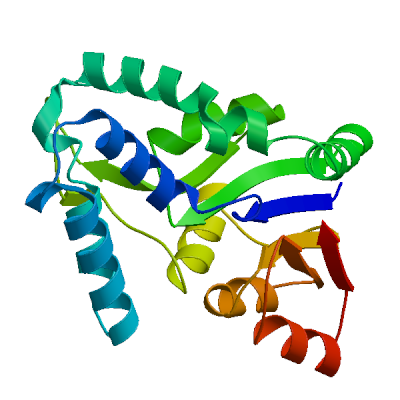
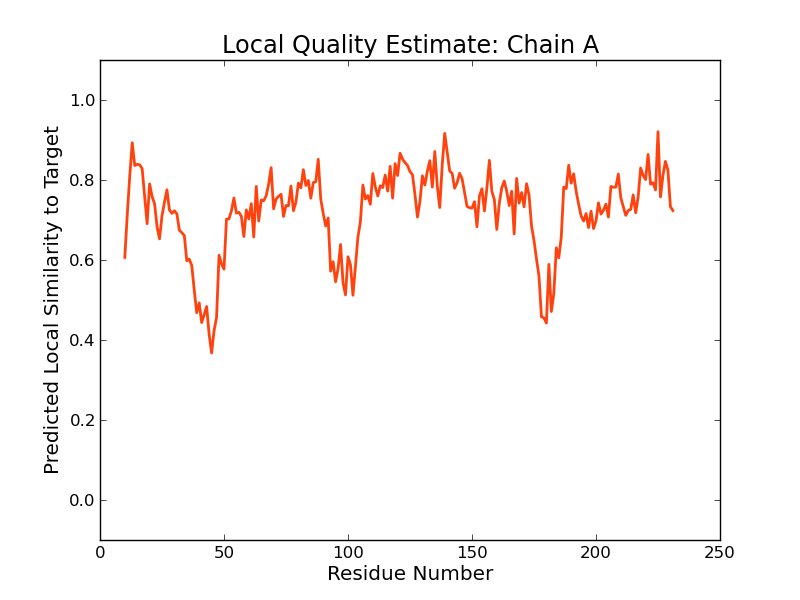
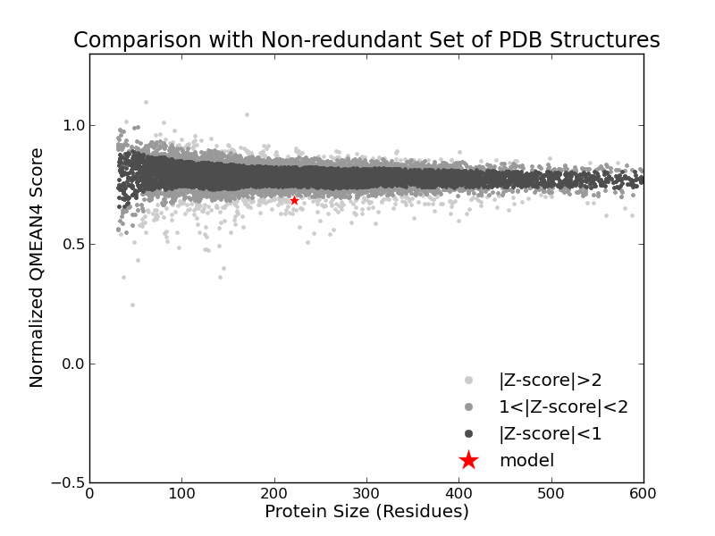
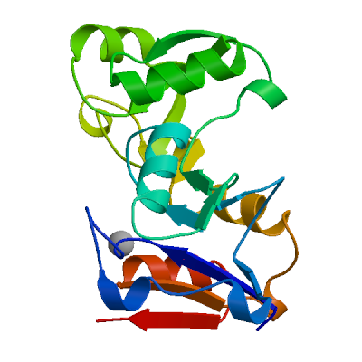
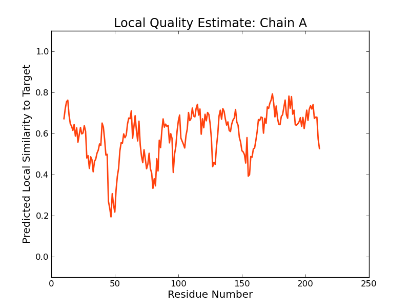
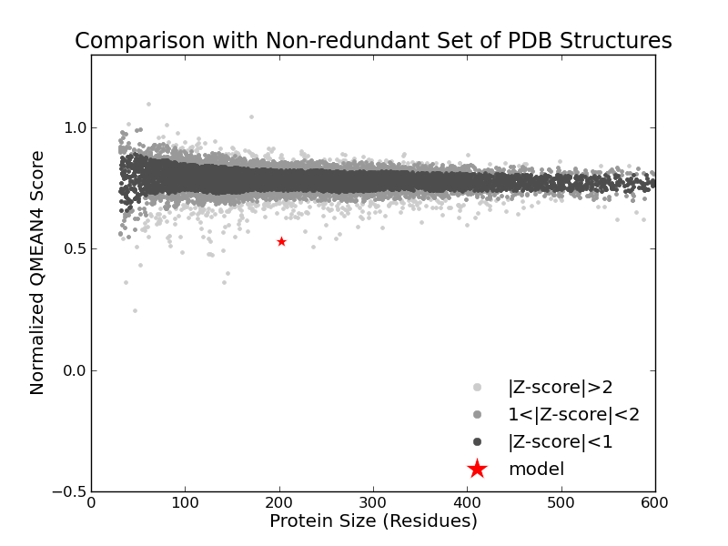

SWISS-MODEL Homology Modelling Report |
Model Building Report
This document lists the results for the homology modelling project "T451DRAFT_0804" submitted to SWISS-MODEL workspace on July 11, 2017, 7:23 p.m..The submitted primary amino acid sequence is given in Table T1.
If you use any results in your research, please cite the relevant publications:
Marco Biasini; Stefan Bienert; Andrew Waterhouse; Konstantin Arnold; Gabriel Studer; Tobias Schmidt; Florian Kiefer; Tiziano Gallo Cassarino; Martino Bertoni; Lorenza Bordoli; Torsten Schwede. (2014). SWISS-MODEL: modelling protein tertiary and quaternary structure using evolutionary information. Nucleic Acids Research (1 July 2014) 42 (W1): W252-W258; doi: 10.1093/nar/gku340.Arnold, K., Bordoli, L., Kopp, J. and Schwede, T. (2006) The SWISS-MODEL workspace: a web-based environment for protein structure homology modelling. Bioinformatics, 22, 195-201.
Benkert, P., Biasini, M. and Schwede, T. (2011) Toward the estimation of the absolute quality of individual protein structure models. Bioinformatics, 27, 343-350
Results
The SWISS-MODEL template library (SMTL version 2017-07-06, PDB release 2017-06-30) was searched with Blast (Altschul et al., 1997) and HHBlits (Remmert, et al., 2011) for evolutionary related structures matching the target sequence in Table T1. For details on the template search, see Materials and Methods. Overall 894 templates were found (Table T2).
Models
The following models were built (see Materials and Methods "Model Building"):
Model #01 | File | Built with | Oligo-State | Ligands | GMQE | QMEAN |
|---|---|---|---|---|---|---|
|  | PDB | ProMod3 Version 1.0.2. | MONOMER | None | 0.62 | -2.38 |
|  |  |
| Template | Seq Identity | Oligo-state | Found by | Method | Resolution | Seq Similarity | Range | Coverage | Description |
|---|---|---|---|---|---|---|---|---|---|
| 3fvv.1.A | 24.30 | monomer | HHblits | X-ray | 2.10Å | 0.32 | 10 - 231 | 0.93 | uncharacterized protein |
| Ligand | Added to Model | Description |
|---|---|---|
| SO4 | ✕ - Not biologically relevant. | SULFATE ION |
Target MKFMLSKSMEVCAFFDVDETIWNEKSVITFYQFYLDVTKG--DKADFFWEQFNKNVKNTISAG-ISREELNAWFYLEHFS
3fvv.1.A ---------RRLALFDLDHTLLPLDSDYQWADFLAR-TGRAGDPAEA--RRRNDDLMERYNRGELTAEQAAEFML-GLLA
Target GVSVSHLREIAEQWSIKKFNQPSFWQDKVIERIEYHKNKGHAIVLVSGSFREVLAPLAKRLGVTDILCSPLEEKDGCYTG
3fvv.1.A AHSPVELAAWHEEFMRDV-IRPSLTV-QAVDVVRGHLAAGDLCALVTATNSFVTAPIARAFGVQHLIATDPEYRDGRYTG
Target NMLGSPMIGYGKANAVSDYLREHK---IDPVHCYGYGDDTTDIPFIGTVGNSYIVINNNHDELSVLAEIMGYQTLNV
3fvv.1.A RIEGTPSFREGKVVRVNQWLAGMGLALGDFAESYFYSDSVNDVPLLEAVTRPIAA--NPSPGLREIAQARGWQVIDL
Model #02 | File | Built with | Oligo-State | Ligands | GMQE | QMEAN |
|---|---|---|---|---|---|---|
|  | PDB | ProMod3 Version 1.0.2. | MONOMER (matching prediction) |
1 x MG: MAGNESIUM ION; | 0.44 | -6.14 |
|  |  |
| Template | Seq Identity | Oligo-state | Found by | Method | Resolution | Seq Similarity | Range | Coverage | Description |
|---|---|---|---|---|---|---|---|---|---|
| 4jdp.1.A | 17.30 | homo-dimer | HHblits | X-ray | 1.76Å | 0.27 | 10 - 211 | 0.80 | p-nitrophenyl phosphatase (Pho2) |
| Ligand | Added to Model | Description | |
|---|---|---|---|
| MG | ✓ | MAGNESIUM ION | |
| CL | ✕ - Not biologically relevant. | CHLORIDE ION | |
| CL | ✕ - Not biologically relevant. | CHLORIDE ION | |
| CL | ✕ - Not biologically relevant. | CHLORIDE ION | |
| CL | ✕ - Not biologically relevant. | CHLORIDE ION | |
| CL | ✕ - Not biologically relevant. | CHLORIDE ION | |
| CL | ✕ - Not biologically relevant. | CHLORIDE ION | |
| CL | ✕ - Not biologically relevant. | CHLORIDE ION | |
| CL | ✕ - Not biologically relevant. | CHLORIDE ION | |
| MG | ✕ - Binding site not conserved. | MAGNESIUM ION |
Target MKFMLSKSMEVCAFFDVDETIWNEKSVITFYQ---FYLDVTKGDKADFFWEQFNKNVKNTISAGISREELNAWFYLEHFS
4jdp.1.A ---------KKGYIIDIDGVIGKSVTPIPEGVEGVKKLKELGKKIIF----------VS-NNSTRSRRILLERLR-S-F-
Target GVS--VSHLREIA---EQWSIKKFNQ-PSFWQDKVIERIEYHKNKGHAIV-------LVSGSFR----EVLAPLAKRL--
4jdp.1.A GLEVGEDEILVATYATARFIAREKPNAKVFTT-GEEGLIEELRLAGLEIVDYDEAEYLVVGSNRKINFELMTKALRACLR
Target GVTDILCSPLEEK-----------------DGCYTGNMLGSPMIGYGKANAVSDYLREHKIDPVHCYGYGDDT-TDIPFI
4jdp.1.A GIRYIATNPDRIFPAEDGPIPGTGMIIGALYWMTGREP--DVVVGKPSEVIMREALDILGLDAKDVAVVGDQIDVDVAAG
Target GTVGNSYIVINNNHDELSVLAEIMGYQTLNV
4jdp.1.A KAIGAETVLVL--------------------
Materials and Methods
Template Search
Template search with Blast and HHBlits has been performed against the SWISS-MODEL template library (SMTL, last update: 2017-07-06, last included PDB release: 2017-06-30).
The target sequence was searched with BLAST (Altschul et al., 1997) against the primary amino acid sequence contained in the SMTL. A total of 7 templates were found.
An initial HHblits profile has been built using the procedure outlined in (Remmert, et al., 2011), followed by 1 iteration of HHblits against NR20. The obtained profile has then be searched against all profiles of the SMTL. A total of 914 templates were found.
Template Selection
For each identified template, the template's quality has been predicted from features of the target-template alignment. The templates with the highest quality have then been selected for model building.
Model Building
Models are built based on the target-template alignment using ProMod3. Coordinates which are conserved between the target and the template are copied from the template to the model. Insertions and deletions are remodelled using a fragment library. Side chains are then rebuilt. Finally, the geometry of the resulting model is regularized by using a force field. In case loop modelling with ProMod3 fails, an alternative model is built with PROMOD-II (Guex, et al., 1997).
Model Quality Estimation
The global and per-residue model quality has been assessed using the QMEAN scoring function (Benkert, et al., 2011) . For improved performance, weights of the individual QMEAN terms have been trained specifically for SWISS-MODEL.
Ligand Modelling
Ligands present in the template structure are transferred by homology to the model when the following criteria are met (Gallo -Casserino, to be published): (a) The ligands are annotated as biologically relevant in the template library, (b) the ligand is in contact with the model, (c) the ligand is not clashing with the protein, (d) the residues in contact with the ligand are conserved between the target and the template. If any of these four criteria is not satisfied, a certain ligand will not be included in the model. The model summary includes information on why and which ligand has not been included.
Oligomeric State Conservation
Homo-oligomeric structure of the target protein is predicted based on the analysis of pairwise interfaces of the identified template structures. For each relevant interface between polypeptide chains (interfaces with more than 10 residue-residue interactions), the QscoreOligomer (Mariani et al., 2011) is predicted from features such as similarity to target and frequency of observing this interface in the identified templates (Kiefer, Bertoni, Biasini, to be published). The prediction is performed with a random forest regressor using these features as input parameters to predict the probability of conservation for each interface. The QscoreOligomer of the whole complex is then calculated as the weight-averaged QscoreOligomer of the interfaces. The oligomeric state of the target is predicted to be the same as in the template when QscoreOligomer is predicted to be higher or equal to 0.5.
References
Altschul, S.F., Madden, T.L., Schaffer, A.A., Zhang, J., Zhang, Z., Miller, W. and Lipman, D.J. (1997) Gapped BLAST and PSI-BLAST: a new generation of protein database search programs. Nucleic Acids Res, 25, 3389-3402.
Remmert, M., Biegert, A., Hauser, A. and Soding, J. (2012) HHblits: lightning-fast iterative protein sequence searching by HMM-HMM alignment. Nat Methods, 9, 173-175.
Guex, N. and Peitsch, M.C. (1997) SWISS-MODEL and the Swiss-PdbViewer: an environment for comparative protein modeling. Electrophoresis, 18, 2714-2723.
Sali, A. and Blundell, T.L. (1993) Comparative protein modelling by satisfaction of spatial restraints. J Mol Biol, 234, 779-815.
Benkert, P., Biasini, M. and Schwede, T. (2011) Toward the estimation of the absolute quality of individual protein structure models. Bioinformatics, 27, 343-350.
Mariani, V., Kiefer, F., Schmidt, T., Haas, J. and Schwede, T. (2011) Assessment of template based protein structure predictions in CASP9. Proteins, 79 Suppl 10, 37-58.
Table T1:
Primary amino acid sequence for which templates were searched and models were built.
FWQDKVIERIEYHKNKGHAIVLVSGSFREVLAPLAKRLGVTDILCSPLEEKDGCYTGNMLGSPMIGYGKANAVSDYLREHKIDPVHCYGYGDDTTDIPFI
GTVGNSYIVINNNHDELSVLAEIMGYQTLNV
Table T2:
| Template | Seq Identity | Oligo-state | Found by | Method | Resolution | Seq Similarity | Coverage | Description |
|---|---|---|---|---|---|---|---|---|
| 3fvv.1.A | 25.70 | monomer | BLAST | X-ray | 2.10Å | 0.33 | 0.93 | uncharacterized protein |
| 3fvv.1.A | 24.30 | monomer | HHblits | X-ray | 2.10Å | 0.32 | 0.93 | uncharacterized protein |
| 4ovy.1.A | 20.00 | homo-dimer | HHblits | X-ray | 1.80Å | 0.30 | 0.91 | Haloacid dehalogenase domain protein hydrolase |
| 4as2.1.A | 14.08 | homo-dimer | HHblits | X-ray | 2.12Å | 0.27 | 0.92 | PHOSPHORYLCHOLINE PHOSPHATASE |
| 5jjb.1.A | 19.17 | homo-dimer | HHblits | X-ray | 2.31Å | 0.31 | 0.84 | Phosphoserine phosphatase |
| 5is2.1.A | 20.31 | homo-dimer | HHblits | X-ray | 1.88Å | 0.31 | 0.83 | Phosphoserine phosphatase |
| 5t41.1.A | 19.27 | monomer | HHblits | X-ray | 3.15Å | 0.31 | 0.83 | Phosphoserine phosphatase |
| 5it0.1.A | 19.27 | homo-dimer | HHblits | X-ray | 1.97Å | 0.31 | 0.83 | Phosphoserine phosphatase |
| 5it4.1.A | 19.27 | homo-dimer | HHblits | X-ray | 2.10Å | 0.30 | 0.83 | Phosphoserine phosphatase |
| 3p96.1.A | 20.53 | homo-dimer | HHblits | X-ray | 2.05Å | 0.31 | 0.82 | Phosphoserine phosphatase SerB |
| 1f5s.1.A | 18.85 | monomer | HHblits | X-ray | 1.80Å | 0.30 | 0.83 | PHOSPHOSERINE PHOSPHATASE (PSP) |
| 1f5s.2.A | 18.85 | monomer | HHblits | X-ray | 1.80Å | 0.30 | 0.83 | PHOSPHOSERINE PHOSPHATASE (PSP) |
| 1l7o.1.A | 18.32 | monomer | HHblits | X-ray | 2.20Å | 0.30 | 0.83 | PHOSPHOSERINE PHOSPHATASE |
| 1l7p.2.A | 18.32 | monomer | HHblits | X-ray | 1.90Å | 0.30 | 0.83 | PHOSPHOSERINE PHOSPHATASE |
| 1l7p.1.A | 18.32 | monomer | HHblits | X-ray | 1.90Å | 0.30 | 0.83 | PHOSPHOSERINE PHOSPHATASE |
| 1nnl.1.A | 14.87 | monomer | HHblits | X-ray | 1.53Å | 0.28 | 0.84 | L-3-phosphoserine phosphatase |
| 1nnl.2.A | 14.87 | monomer | HHblits | X-ray | 1.53Å | 0.28 | 0.84 | L-3-phosphoserine phosphatase |
| 1l8l.1.A | 14.36 | homo-dimer | HHblits | X-ray | 2.51Å | 0.27 | 0.84 | L-3-phosphoserine phosphatase |
| 1l8l.1.B | 14.36 | homo-dimer | HHblits | X-ray | 2.51Å | 0.27 | 0.84 | L-3-phosphoserine phosphatase |
| 1l8o.1.A | 14.36 | homo-dimer | HHblits | X-ray | 2.80Å | 0.27 | 0.84 | L-3-phosphoserine phosphatase |
| 1l8o.1.B | 14.36 | homo-dimer | HHblits | X-ray | 2.80Å | 0.27 | 0.84 | L-3-phosphoserine phosphatase |
| 3qnm.1.A | 18.75 | monomer | HHblits | X-ray | 1.70Å | 0.29 | 0.83 | Haloacid dehalogenase-like hydrolase |
| 3cnh.1.A | 11.22 | monomer | HHblits | X-ray | 1.66Å | 0.26 | 0.85 | Hydrolase family protein |
| 3m1y.1.B | 15.26 | homo-dimer | HHblits | X-ray | 2.40Å | 0.28 | 0.82 | Phosphoserine phosphatase (SerB) |
| 3m1y.1.A | 15.26 | homo-dimer | HHblits | X-ray | 2.40Å | 0.28 | 0.82 | Phosphoserine phosphatase (SerB) |
| 1y8a.1.A | 12.37 | monomer | HHblits | X-ray | 1.40Å | 0.26 | 0.84 | hypothetical protein AF1437 |
| 3n28.1.A | 14.74 | monomer | HHblits | X-ray | 2.30Å | 0.28 | 0.82 | Phosphoserine phosphatase |
| 4eze.1.A | 15.26 | monomer | HHblits | X-ray | 2.27Å | 0.27 | 0.82 | Haloacid dehalogenase-like hydrolase |
| 3qgm.1.A | 16.75 | homo-dimer | HHblits | X-ray | 2.00Å | 0.27 | 0.83 | p-nitrophenyl phosphatase (Pho2) |
| 3qgm.1.B | 16.75 | homo-dimer | HHblits | X-ray | 2.00Å | 0.27 | 0.83 | p-nitrophenyl phosphatase (Pho2) |
| 3qgm.2.A | 16.75 | homo-dimer | HHblits | X-ray | 2.00Å | 0.27 | 0.83 | p-nitrophenyl phosphatase (Pho2) |
| 3qgm.2.B | 16.75 | homo-dimer | HHblits | X-ray | 2.00Å | 0.27 | 0.83 | p-nitrophenyl phosphatase (Pho2) |
| 2b0c.1.A | 14.21 | homo-dimer | HHblits | X-ray | 2.00Å | 0.27 | 0.82 | putative phosphatase |
| 3k1z.1.A | 15.87 | monomer | HHblits | X-ray | 1.55Å | 0.27 | 0.82 | Haloacid dehalogenase-like hydrolase domain-containing protein 3 |
| 4f72.1.A | 11.46 | monomer | HHblits | X-ray | 2.40Å | 0.25 | 0.83 | Putative haloacid dehalogenase-like hydrolase |
| 2om6.1.A | 11.70 | homo-dimer | HHblits | X-ray | 2.20Å | 0.26 | 0.81 | Probable phosphoserine phosphatase |
| 3e58.1.A | 12.70 | homo-dimer | HHblits | X-ray | 1.86Å | 0.26 | 0.82 | putative Beta-phosphoglucomutase |
| 3e58.1.B | 12.70 | homo-dimer | HHblits | X-ray | 1.86Å | 0.26 | 0.82 | putative Beta-phosphoglucomutase |
| 1x42.1.A | 13.37 | monomer | HHblits | X-ray | 2.00Å | 0.26 | 0.81 | hypothetical protein PH0459 |
| 4jb3.1.A | 11.11 | monomer | HHblits | X-ray | 1.50Å | 0.26 | 0.82 | Haloacid dehalogenase-like hydrolase |
| 4jdp.1.A | 17.30 | homo-dimer | HHblits | X-ray | 1.76Å | 0.27 | 0.80 | p-nitrophenyl phosphatase (Pho2) |
| 2gfh.1.A | 13.68 | monomer | HHblits | X-ray | 1.90Å | 0.25 | 0.82 | haloacid dehalogenase-like hydrolase domain containing 4 |
| 4f71.1.A | 11.52 | monomer | HHblits | X-ray | 2.27Å | 0.25 | 0.83 | Putative haloacid dehalogenase-like hydrolase |
| 4dcc.1.A | 11.52 | monomer | HHblits | X-ray | 1.65Å | 0.25 | 0.83 | Putative haloacid dehalogenase-like hydrolase |
| 4dfd.1.A | 11.52 | monomer | HHblits | X-ray | 2.00Å | 0.25 | 0.83 | Putative haloacid dehalogenase-like hydrolase |
| 4ygq.1.A | 17.78 | monomer | HHblits | X-ray | 2.00Å | 0.29 | 0.78 | Hydrolase |
| 4uav.1.A | 11.17 | monomer | HHblits | X-ray | 1.30Å | 0.26 | 0.81 | Haloacid dehalogenase-like hydrolase domain-containing protein At3g48420 |
| 2pke.1.A | 12.43 | homo-dimer | HHblits | X-ray | 1.81Å | 0.27 | 0.80 | Haloacid delahogenase-like family hydrolase |
| 2pke.1.B | 12.43 | homo-dimer | HHblits | X-ray | 1.81Å | 0.27 | 0.80 | Haloacid delahogenase-like family hydrolase |
| 2no5.1.A | 13.90 | homo-dimer | HHblits | X-ray | 2.60Å | 0.26 | 0.81 | (S)-2-haloacid dehalogenase IVA |
| 2hsz.1.A | 14.67 | monomer | HHblits | X-ray | 1.90Å | 0.27 | 0.80 | novel predicted phosphatase |
| 2msn.1.A | 16.94 | monomer | HHblits | NMR | NA | 0.28 | 0.79 | Hydrolase, haloacid dehalogenase-like family |
| 2mu1.1.A | 16.94 | monomer | HHblits | NMR | NA | 0.28 | 0.79 | Hydrolase, haloacid dehalogenase-like family |
| 2mu2.1.A | 16.94 | monomer | HHblits | NMR | NA | 0.28 | 0.79 | Hydrolase, haloacid dehalogenase-like family |
| 2go7.1.A | 16.94 | monomer | HHblits | X-ray | 2.10Å | 0.28 | 0.79 | hydrolase, haloacid dehalogenase-like family |
| 2hoq.1.A | 11.76 | homo-dimer | HHblits | X-ray | 1.70Å | 0.26 | 0.81 | Putative HAD-hydrolase PH1655 |
| 3ed5.1.A | 11.89 | monomer | HHblits | X-ray | 1.72Å | 0.26 | 0.80 | YfnB |
| 3r9k.1.A | 12.97 | monomer | HHblits | X-ray | 1.80Å | 0.26 | 0.80 | Putative beta-phosphoglucomutase |
| 1te2.1.A | 15.30 | homo-dimer | HHblits | X-ray | 1.76Å | 0.27 | 0.79 | 2-deoxyglucose-6-P phosphatase |
| 4kn8.1.A | 12.30 | homo-dimer | HHblits | X-ray | 1.50Å | 0.26 | 0.81 | Thermostable NPPase |
| 4kn8.1.B | 12.30 | homo-dimer | HHblits | X-ray | 1.50Å | 0.26 | 0.81 | Thermostable NPPase |
| 3qu9.1.A | 12.43 | monomer | HHblits | X-ray | 1.90Å | 0.26 | 0.80 | INORGANIC PYROPHOSPHATASE |
| 3qut.1.A | 12.43 | monomer | HHblits | X-ray | 1.50Å | 0.26 | 0.80 | INORGANIC PYROPHOSPHATASE |
| 3qu7.2.A | 12.43 | monomer | HHblits | X-ray | 1.90Å | 0.26 | 0.80 | INORGANIC PYROPHOSPHATASE |
| 1rqn.1.A | 15.05 | homo-dimer | HHblits | X-ray | 2.80Å | 0.26 | 0.81 | Phosphonoacetaldehyde Hydrolase |
| 1rqn.1.B | 15.05 | homo-dimer | HHblits | X-ray | 2.80Å | 0.26 | 0.81 | Phosphonoacetaldehyde Hydrolase |
| 3i76.1.A | 11.96 | monomer | HHblits | X-ray | 2.00Å | 0.27 | 0.80 | Putative HAD-hydrolase yfnB |
| 3i76.2.A | 11.96 | monomer | HHblits | X-ray | 2.00Å | 0.27 | 0.80 | Putative HAD-hydrolase yfnB |
| 3i76.3.A | 11.96 | monomer | HHblits | X-ray | 2.00Å | 0.27 | 0.80 | Putative HAD-hydrolase yfnB |
| 4eel.1.A | 12.90 | monomer | HHblits | X-ray | 1.75Å | 0.26 | 0.81 | Beta-phosphoglucomutase-related protein |
| 3ddh.1.A | 13.59 | homo-dimer | HHblits | X-ray | 2.00Å | 0.27 | 0.80 | Putative haloacid dehalogenase-like family hydrolase |
| 1zrn.1.A | 11.83 | homo-dimer | HHblits | X-ray | 1.83Å | 0.26 | 0.81 | L-2-HALOACID DEHALOGENASE |
| 4o8c.1.A | 13.51 | monomer | HHblits | X-ray | 2.00Å | 0.26 | 0.80 | Thermostable NPPase |
| 4o8c.2.A | 13.51 | monomer | HHblits | X-ray | 2.00Å | 0.26 | 0.80 | Thermostable NPPase |
| 3qu4.1.A | 11.29 | monomer | HHblits | X-ray | 2.10Å | 0.26 | 0.81 | INORGANIC PYROPHOSPHATASE |
| 3smv.1.A | 13.30 | monomer | HHblits | X-ray | 1.38Å | 0.25 | 0.81 | S-(-)-azetidine-2-carboxylate hydrolase |
| 3qub.1.A | 12.43 | monomer | HHblits | X-ray | 1.90Å | 0.26 | 0.80 | INORGANIC PYROPHOSPHATASE |
| 3d6j.1.A | 14.13 | monomer | HHblits | X-ray | 2.00Å | 0.26 | 0.80 | Putative haloacid dehalogenase-like hydrolase |
| 4uar.1.A | 12.50 | monomer | HHblits | X-ray | 1.90Å | 0.26 | 0.80 | Protein CbbY |
| 4knv.1.A | 12.97 | monomer | HHblits | X-ray | 1.99Å | 0.26 | 0.80 | N-acylneuraminate-9-phosphatase |
| 1aq6.1.A | 12.90 | homo-dimer | HHblits | X-ray | 1.95Å | 0.26 | 0.81 | L-2-HALOACID DEHALOGENASE |
| 2fi1.1.A | 12.50 | monomer | HHblits | X-ray | 1.40Å | 0.26 | 0.80 | hydrolase, haloacid dehalogenase-like family |
| 2ioh.1.A | 15.14 | homo-dimer | HHblits | X-ray | 2.90Å | 0.26 | 0.80 | Phosphonoacetaldehyde hydrolase |
| 3kbb.1.A | 13.04 | monomer | HHblits | X-ray | 1.74Å | 0.26 | 0.80 | Phosphorylated carbohydrates phosphatase TM_1254 |
| 3qu5.1.A | 11.35 | monomer | HHblits | X-ray | 1.24Å | 0.26 | 0.80 | INORGANIC PYROPHOSPHATASE |
| 1qq5.1.A | 12.37 | homo-dimer | HHblits | X-ray | 1.52Å | 0.25 | 0.81 | PROTEIN (L-2-HALOACID DEHALOGENASE) |
| 3quc.1.A | 13.11 | monomer | HHblits | X-ray | 2.00Å | 0.27 | 0.79 | INORGANIC PYROPHOSPHATASE |
| 3qyp.1.A | 13.11 | monomer | HHblits | X-ray | 1.60Å | 0.27 | 0.79 | INORGANIC PYROPHOSPHATASE |
| 2hi0.1.A | 14.92 | monomer | HHblits | X-ray | 1.51Å | 0.27 | 0.78 | Putative phosphoglycolate phosphatase |
| 2hi0.2.A | 14.92 | monomer | HHblits | X-ray | 1.51Å | 0.27 | 0.78 | Putative phosphoglycolate phosphatase |
| 2i6x.1.A | 9.09 | monomer | HHblits | X-ray | 2.40Å | 0.25 | 0.81 | Hydrolase, haloacid dehalogenase-like family |
| 4uat.1.A | 12.02 | monomer | HHblits | X-ray | 1.30Å | 0.26 | 0.79 | Protein CbbY |
| 3u26.1.A | 13.04 | monomer | HHblits | X-ray | 1.59Å | 0.26 | 0.80 | PF00702 domain protein |
| 1fez.1.A | 15.14 | homo-dimer | HHblits | X-ray | 3.00Å | 0.26 | 0.80 | PHOSPHONOACETALDEHYDE HYDROLASE |
| 1fez.1.B | 15.14 | homo-dimer | HHblits | X-ray | 3.00Å | 0.26 | 0.80 | PHOSPHONOACETALDEHYDE HYDROLASE |
| 4rn3.1.A | 9.73 | monomer | HHblits | X-ray | 2.15Å | 0.26 | 0.80 | HAD superfamily hydrolase |
| 4rn3.2.A | 9.73 | monomer | HHblits | X-ray | 2.15Å | 0.26 | 0.80 | HAD superfamily hydrolase |
| 3onn.1.A | 12.64 | monomer | HHblits | X-ray | 1.87Å | 0.27 | 0.79 | Protein SSM1 |
| 3qu2.1.A | 11.96 | homo-dimer | HHblits | X-ray | 1.95Å | 0.26 | 0.80 | INORGANIC PYROPHOSPHATASE |
| 3qx7.1.A | 11.96 | monomer | HHblits | X-ray | 2.00Å | 0.26 | 0.80 | INORGANIC PYROPHOSPHATASE |
| 3quq.1.A | 11.96 | monomer | HHblits | X-ray | 1.65Å | 0.26 | 0.80 | INORGANIC PYROPHOSPHATASE |
| 3qu2.1.B | 11.96 | homo-dimer | HHblits | X-ray | 1.95Å | 0.26 | 0.80 | INORGANIC PYROPHOSPHATASE |
| 2iof.1.A | 15.14 | homo-dimer | HHblits | X-ray | 2.50Å | 0.25 | 0.80 | Phosphonoacetaldehyde hydrolase |
| 2iof.1.B | 15.14 | homo-dimer | HHblits | X-ray | 2.50Å | 0.25 | 0.80 | Phosphonoacetaldehyde hydrolase |
| 2wf6.1.A | 15.47 | monomer | HHblits | X-ray | 1.40Å | 0.27 | 0.78 | BETA-PHOSPHOGLUCOMUTASE |
| 1z4n.1.A | 15.47 | monomer | HHblits | X-ray | 1.97Å | 0.27 | 0.78 | Beta-phosphoglucomutase |
| 1z4n.2.A | 15.47 | monomer | HHblits | X-ray | 1.97Å | 0.27 | 0.78 | Beta-phosphoglucomutase |
| 1z4o.1.A | 15.47 | monomer | HHblits | X-ray | 1.90Å | 0.27 | 0.78 | Beta-phosphoglucomutase |
| 1z4o.2.A | 15.47 | monomer | HHblits | X-ray | 1.90Å | 0.27 | 0.78 | Beta-phosphoglucomutase |
| 1lvh.1.A | 15.47 | monomer | HHblits | X-ray | 2.30Å | 0.27 | 0.78 | beta-phosphoglucomutase |
| 1lvh.2.A | 15.47 | monomer | HHblits | X-ray | 2.30Å | 0.27 | 0.78 | beta-phosphoglucomutase |
| 1zol.1.A | 15.47 | monomer | HHblits | X-ray | 1.90Å | 0.27 | 0.78 | beta-phosphoglucomutase |
| 2wfa.1.A | 15.47 | monomer | HHblits | X-ray | 1.65Å | 0.27 | 0.78 | BETA-PHOSPHOGLUCOMUTASE |
| 2wf9.1.A | 15.47 | monomer | HHblits | X-ray | 1.40Å | 0.27 | 0.78 | BETA-PHOSPHOGLUCOMUTASE |
| 2fdr.1.A | 13.59 | monomer | HHblits | X-ray | 2.00Å | 0.26 | 0.80 | conserved hypothetical protein |
| 3nuq.1.A | 13.26 | monomer | HHblits | X-ray | 1.70Å | 0.27 | 0.78 | putative nucleotide phosphatase |
| 3umg.1.A | 11.96 | homo-dimer | HHblits | X-ray | 2.25Å | 0.25 | 0.80 | Haloacid dehalogenase |
| 1jud.1.A | 10.27 | homo-dimer | HHblits | X-ray | 2.50Å | 0.25 | 0.80 | L-2-HALOACID DEHALOGENASE |
| 1qh9.1.A | 10.27 | homo-dimer | HHblits | X-ray | 2.50Å | 0.25 | 0.80 | 2-HALOACID DEHALOGENASE |
| 3kd3.1.A | 17.98 | monomer | HHblits | X-ray | 1.70Å | 0.28 | 0.77 | Phosphoserine phosphohydrolase-like protein |
| 1sww.1.A | 14.13 | homo-dimer | HHblits | X-ray | 2.30Å | 0.25 | 0.80 | phosphonoacetaldehyde hydrolase |
| 4gib.1.A | 16.11 | monomer | HHblits | X-ray | 2.27Å | 0.27 | 0.78 | Beta-phosphoglucomutase |
| 4gib.2.A | 16.11 | monomer | HHblits | X-ray | 2.27Å | 0.27 | 0.78 | Beta-phosphoglucomutase |
| 4cf3.1.A | 12.50 | homo-dimer | HHblits | X-ray | 2.16Å | 0.25 | 0.80 | L-HALOACID DEHALOGENASE |
| 3opx.1.A | 12.09 | monomer | HHblits | X-ray | 1.70Å | 0.26 | 0.79 | Protein SSM1 |
| 1rdf.3.A | 14.59 | homo-dimer | HHblits | X-ray | 2.80Å | 0.25 | 0.80 | phosphonoacetaldehyde hydrolase |
| 1rdf.1.B | 14.59 | homo-dimer | HHblits | X-ray | 2.80Å | 0.25 | 0.80 | phosphonoacetaldehyde hydrolase |
| 1rdf.2.A | 14.59 | homo-dimer | HHblits | X-ray | 2.80Å | 0.25 | 0.80 | phosphonoacetaldehyde hydrolase |
| 1rdf.2.B | 14.59 | homo-dimer | HHblits | X-ray | 2.80Å | 0.25 | 0.80 | phosphonoacetaldehyde hydrolase |
| 1rdf.1.A | 14.59 | homo-dimer | HHblits | X-ray | 2.80Å | 0.25 | 0.80 | phosphonoacetaldehyde hydrolase |
| 1rdf.3.B | 14.59 | homo-dimer | HHblits | X-ray | 2.80Å | 0.25 | 0.80 | phosphonoacetaldehyde hydrolase |
| 3l5k.1.A | 9.73 | monomer | HHblits | X-ray | 2.00Å | 0.25 | 0.80 | Haloacid dehalogenase-like hydrolase domain-containing protein 1A |
| 4ce6.1.A | 11.48 | homo-dimer | HHblits | X-ray | 2.05Å | 0.26 | 0.79 | L-HALOACID DEHALOGENASE |
| 4cnq.1.A | 11.48 | homo-dimer | HHblits | X-ray | 1.84Å | 0.26 | 0.79 | L-HALOACID DEHALOGENASE |
| 2ymp.1.A | 11.48 | homo-dimer | HHblits | X-ray | 1.96Å | 0.25 | 0.79 | L-HALOACID DEHALOGENASE |
| 2yml.1.A | 11.48 | homo-dimer | HHblits | X-ray | 1.79Å | 0.25 | 0.79 | L-HALOACID DEHALOGENASE |
| 3nas.1.A | 16.20 | homo-dimer | HHblits | X-ray | 3.00Å | 0.27 | 0.77 | beta-phosphoglucomutase |
| 3nas.1.B | 16.20 | homo-dimer | HHblits | X-ray | 3.00Å | 0.27 | 0.77 | beta-phosphoglucomutase |
| 3um9.1.A | 10.27 | homo-dimer | HHblits | X-ray | 2.19Å | 0.24 | 0.80 | Haloacid dehalogenase, type II |
| 4cf5.1.A | 11.54 | homo-dimer | HHblits | X-ray | 2.34Å | 0.26 | 0.79 | L-HALOACID DEHALOGENASE |
| 4ex6.1.A | 13.81 | monomer | HHblits | X-ray | 1.25Å | 0.26 | 0.78 | AlnB |
| 1rkv.1.A | 16.00 | homo-dimer | HHblits | X-ray | 1.90Å | 0.29 | 0.76 | homoserine kinase |
| 1rkv.1.B | 16.00 | homo-dimer | HHblits | X-ray | 1.90Å | 0.29 | 0.76 | homoserine kinase |
| 3umc.1.A | 10.44 | homo-dimer | HHblits | X-ray | 2.15Å | 0.25 | 0.79 | haloacid dehalogenase |
| 2nyv.1.A | 15.56 | monomer | HHblits | X-ray | 2.10Å | 0.26 | 0.78 | Phosphoglycolate phosphatase |
| 3umb.1.A | 10.33 | homo-dimer | HHblits | X-ray | 2.20Å | 0.24 | 0.80 | dehalogenase-like hydrolase |
| 3fm9.1.A | 15.64 | monomer | HHblits | X-ray | 2.70Å | 0.27 | 0.77 | Beta-phosphoglucomutase |
| 4cf4.1.A | 11.54 | homo-dimer | HHblits | X-ray | 2.14Å | 0.25 | 0.79 | L-HALOACID DEHALOGENASE |
| 2hcf.1.A | 12.71 | monomer | HHblits | X-ray | 1.80Å | 0.26 | 0.78 | Hydrolase, haloacid dehalogenase-like family |
| 3s6j.1.A | 11.60 | homo-trimer | HHblits | X-ray | 2.20Å | 0.25 | 0.78 | Hydrolase, haloacid dehalogenase-like family |
| 3s6j.1.B | 11.60 | homo-trimer | HHblits | X-ray | 2.20Å | 0.25 | 0.78 | Hydrolase, haloacid dehalogenase-like family |
| 3dv9.1.A | 10.38 | monomer | HHblits | X-ray | 1.72Å | 0.25 | 0.79 | beta-phosphoglucomutase |
| 3sd7.1.A | 14.04 | monomer | HHblits | X-ray | 1.70Å | 0.27 | 0.77 | Putative phosphatase |
| 3iru.1.A | 9.78 | homo-hexamer | HHblits | X-ray | 2.30Å | 0.24 | 0.80 | phoshonoacetaldehyde hydrolase like protein |
| 2ah5.1.A | 15.43 | monomer | HHblits | X-ray | 1.74Å | 0.28 | 0.76 | COG0546: Predicted phosphatases |
| 4g9b.1.A | 14.61 | homo-dimer | HHblits | X-ray | 1.70Å | 0.26 | 0.77 | Beta-phosphoglucomutase |
| 2hdo.1.A | 11.24 | monomer | HHblits | X-ray | 1.50Å | 0.26 | 0.77 | Phosphoglycolate phosphatase |
| 2yy6.1.A | 15.25 | monomer | HHblits | X-ray | 2.30Å | 0.26 | 0.77 | phosphoglycolate phosphatase |
| 2yy6.2.A | 15.25 | monomer | HHblits | X-ray | 2.30Å | 0.26 | 0.77 | phosphoglycolate phosphatase |
| 2p11.1.A | 8.84 | homo-dimer | HHblits | X-ray | 2.20Å | 0.24 | 0.78 | Hypothetical protein |
| 2fea.1.A | 13.14 | monomer | HHblits | X-ray | 2.00Å | 0.27 | 0.76 | 2-hydroxy-3-keto-5-methylthiopentenyl-1-phosphate phosphatase |
| 2fea.2.A | 13.14 | monomer | HHblits | X-ray | 2.00Å | 0.27 | 0.76 | 2-hydroxy-3-keto-5-methylthiopentenyl-1-phosphate phosphatase |
| 2zg6.1.A | 13.48 | homo-dimer | HHblits | X-ray | 2.40Å | 0.25 | 0.77 | Putative uncharacterized protein ST2620 |
| 2g80.1.A | 13.07 | monomer | HHblits | X-ray | 2.28Å | 0.26 | 0.76 | Protein UTR4 |
| 2g80.2.A | 13.07 | monomer | HHblits | X-ray | 2.28Å | 0.26 | 0.76 | Protein UTR4 |
| 2g80.3.A | 13.07 | monomer | HHblits | X-ray | 2.28Å | 0.26 | 0.76 | Protein UTR4 |
| 2g80.4.A | 13.07 | monomer | HHblits | X-ray | 2.28Å | 0.26 | 0.76 | Protein UTR4 |
| 3mc1.1.A | 11.30 | monomer | HHblits | X-ray | 1.93Å | 0.25 | 0.77 | Predicted phosphatase, HAD family |
| 3kzx.1.A | 16.67 | monomer | HHblits | X-ray | 1.90Å | 0.26 | 0.75 | HAD-superfamily hydrolase, subfamily IA, variant 1 |
| 4ap9.1.A | 20.36 | homo-octamer | HHblits | X-ray | 1.78Å | 0.29 | 0.72 | PHOSPHOSERINE PHOSPHATASE |
| 2qlt.1.A | 14.20 | monomer | HHblits | X-ray | 1.60Å | 0.25 | 0.76 | (DL)-glycerol-3-phosphatase 1 |
| 4uw9.1.A | 15.12 | monomer | HHblits | X-ray | 2.30Å | 0.26 | 0.74 | BETA-PHOSPHOGLUCOMUTASE |
| 3m9l.1.A | 12.21 | homo-dimer | HHblits | X-ray | 1.60Å | 0.26 | 0.74 | Hydrolase, haloacid dehalogenase-like family |
| 4l57.1.A | 8.18 | homo-dimer | HHblits | X-ray | 1.08Å | 0.24 | 0.69 | 5'(3')-deoxyribonucleotidase, cytosolic type |
| 4e88.1.A | 14.19 | homo-dimer | HHblits | X-ray | 2.00Å | 0.26 | 0.67 | DE NOVO DESIGNED CYSTEINE ESTERASE ECH13 |
| 3u13.1.A | 14.19 | homo-dimer | HHblits | X-ray | 1.60Å | 0.26 | 0.67 | artificial protein OR51 |
| 2i7d.1.A | 8.86 | homo-dimer | HHblits | X-ray | 1.20Å | 0.24 | 0.68 | 5'(3')-deoxyribonucleotidase, cytosolic type |
| 2i7d.1.B | 8.86 | homo-dimer | HHblits | X-ray | 1.20Å | 0.24 | 0.68 | 5'(3')-deoxyribonucleotidase, cytosolic type |
| 4mwo.1.A | 12.26 | homo-dimer | HHblits | X-ray | 1.67Å | 0.25 | 0.67 | 5'(3')-deoxyribonucleotidase, mitochondrial |
| 4mum.1.A | 10.97 | homo-dimer | HHblits | X-ray | 1.27Å | 0.24 | 0.67 | Mitochondrial 5' nucleotidase |
| 4l6a.1.A | 12.42 | homo-dimer | HHblits | X-ray | 1.40Å | 0.25 | 0.66 | 5'(3')-deoxyribonucleotidase, mitochondrial |
| 2jao.1.A | 11.04 | homo-dimer | HHblits | X-ray | 2.00Å | 0.24 | 0.67 | 5'(3')-DEOXYRIBONUCLEOTIDASE |
| 1q91.1.A | 9.74 | monomer | HHblits | X-ray | 1.60Å | 0.24 | 0.67 | 5(3)-deoxyribonucleotidase |
| 1z4l.1.A | 8.50 | homo-dimer | HHblits | X-ray | 1.80Å | 0.23 | 0.66 | 5'(3')-deoxyribonucleotidase |
| 3bwv.1.A | 8.39 | homo-dimer | HHblits | X-ray | 1.55Å | 0.24 | 0.62 | Putative 5'(3')-deoxyribonucleotidase |
| 4gxt.1.A | 13.24 | monomer | HHblits | X-ray | 1.82Å | 0.27 | 0.59 | a conserved functionally unknown protein |
| 2qyh.1.A | 22.03 | homo-dimer | HHblits | X-ray | 2.60Å | 0.31 | 0.51 | Hypothetical conserved protein, GK1056 |
| 2qyh.1.B | 22.03 | homo-dimer | HHblits | X-ray | 2.60Å | 0.31 | 0.51 | Hypothetical conserved protein, GK1056 |
| 2q4t.1.A | 14.75 | homo-dimer | HHblits | X-ray | 2.35Å | 0.28 | 0.53 | Cytosolic 5'-nucleotidase III |
| 2q4t.1.B | 14.75 | homo-dimer | HHblits | X-ray | 2.35Å | 0.28 | 0.53 | Cytosolic 5'-nucleotidase III |
| 4jy8.1.A | 14.52 | monomer | HHblits | X-ray | 2.90Å | 0.26 | 0.54 | FEFE-HYDROGENASE MATURASE |
| 4kx3.1.A | 14.88 | monomer | HHblits | X-ray | 2.10Å | 0.28 | 0.52 | Cytosolic 5'-nucleotidase 3 |
| 4fe3.1.A | 14.88 | monomer | HHblits | X-ray | 1.74Å | 0.28 | 0.52 | Cytosolic 5'-nucleotidase 3 |
| 3ciw.1.A | 14.52 | monomer | HHblits | X-ray | 1.35Å | 0.26 | 0.54 | FeFe-Hydrogenase maturase |
| 4nv0.1.A | 13.93 | monomer | HHblits | X-ray | 1.65Å | 0.26 | 0.53 | 7-methylguanosine phosphate-specific 5'-nucleotidase |
| 4nv0.2.A | 13.93 | monomer | HHblits | X-ray | 1.65Å | 0.26 | 0.53 | 7-methylguanosine phosphate-specific 5'-nucleotidase |
| 4nwi.2.A | 13.93 | monomer | HHblits | X-ray | 2.05Å | 0.26 | 0.53 | 7-methylguanosine phosphate-specific 5'-nucleotidase |
| 3r4c.1.A | 14.17 | monomer | HHblits | X-ray | 1.82Å | 0.27 | 0.52 | Hydrolase, haloacid dehalogenase-like hydrolase |
| 3wgu.1.A | 14.29 | hetero-oligomer | HHblits | X-ray | 2.80Å | 0.27 | 0.52 | Sodium/potassium-transporting ATPase subunit alpha-1 |
| 3wgu.2.A | 14.29 | hetero-oligomer | HHblits | X-ray | 2.80Å | 0.27 | 0.52 | Sodium/potassium-transporting ATPase subunit alpha-1 |
| 3n23.1.A | 15.13 | hetero-oligomer | HHblits | X-ray | 4.60Å | 0.26 | 0.52 | Sodium/potassium-transporting ATPase subunit alpha-1 |
| 4hyt.1.A | 14.29 | hetero-oligomer | HHblits | X-ray | 3.40Å | 0.26 | 0.52 | Sodium/potassium-transporting ATPase subunit alpha-1 |
| 4hqj.1.A | 14.29 | hetero-oligomer | HHblits | X-ray | 4.30Å | 0.26 | 0.52 | Sodium/potassium-transporting ATPase subunit alpha-1 |
| 4res.1.A | 14.29 | hetero-oligomer | HHblits | X-ray | 3.41Å | 0.26 | 0.52 | Sodium/potassium-transporting ATPase subunit alpha-1 |
| 3a3y.1.A | 14.41 | hetero-oligomer | HHblits | X-ray | 2.80Å | 0.27 | 0.51 | Na, K-ATPase alpha subunit |
| 3b8e.1.A | 14.29 | hetero-oligomer | HHblits | X-ray | 3.50Å | 0.26 | 0.52 | Sodium/potassium-transporting ATPase subunit alpha-1 |
| 3kdp.1.A | 14.29 | hetero-oligomer | HHblits | X-ray | 3.50Å | 0.26 | 0.52 | Sodium/potassium-transporting ATPase subunit alpha-1 |
| 4xe5.1.A | 14.41 | hetero-oligomer | HHblits | X-ray | 3.90Å | 0.27 | 0.51 | Sodium/potassium-transporting ATPase subunit alpha-1 |
| 4ux1.1.A | 14.41 | hetero-oligomer | HHblits | 2DX | 8.00Å | 0.27 | 0.51 | POTASSIUM-TRANSPORTING ATPASE ALPHA CHAIN 1 |
| 2yn9.1.A | 14.41 | hetero-oligomer | HHblits | 2DX | 8.00Å | 0.27 | 0.51 | POTASSIUM-TRANSPORTING ATPASE ALPHA CHAIN 1 |
| 2xzb.1.A | 14.41 | hetero-oligomer | HHblits | 2DX | 7.00Å | 0.27 | 0.51 | POTASSIUM-TRANSPORTING ATPASE ALPHA CHAIN 1 |
| 4bew.1.A | 14.91 | monomer | HHblits | X-ray | 2.50Å | 0.28 | 0.49 | SARCOPLASMIC/ENDOPLASMIC RETICULUM CALCIUM ATPASE 1 |
| 4bew.2.A | 14.91 | monomer | HHblits | X-ray | 2.50Å | 0.28 | 0.49 | SARCOPLASMIC/ENDOPLASMIC RETICULUM CALCIUM ATPASE 1 |
| 4ycm.1.A | 14.91 | monomer | HHblits | X-ray | 3.20Å | 0.28 | 0.49 | Sarcoplasmic/endoplasmic reticulum calcium ATPase 1 |
| 4nab.1.A | 14.91 | monomer | HHblits | X-ray | 3.50Å | 0.28 | 0.49 | Sarcoplasmic/endoplasmic reticulum calcium ATPase 1 |
| 3ba6.1.A | 14.91 | monomer | HHblits | X-ray | 2.80Å | 0.28 | 0.49 | Sarcoplasmic/endoplasmic reticulum calcium ATPase 1 |
| 2oa0.1.A | 14.91 | monomer | HHblits | X-ray | 3.40Å | 0.28 | 0.49 | Sarcoplasmic/endoplasmic reticulum calcium ATPase 1 |
| 3fgo.1.A | 14.91 | monomer | HHblits | X-ray | 2.50Å | 0.28 | 0.49 | Sarcoplasmic/endoplasmic reticulum calcium ATPase 1 |
| 3fgo.2.A | 14.91 | monomer | HHblits | X-ray | 2.50Å | 0.28 | 0.49 | Sarcoplasmic/endoplasmic reticulum calcium ATPase 1 |
| 2o9j.1.A | 14.91 | monomer | HHblits | X-ray | 2.65Å | 0.28 | 0.49 | Sarcoplasmic/endoplasmic reticulum calcium ATPase 1 |
| 1xp5.1.A | 14.91 | monomer | HHblits | X-ray | 3.00Å | 0.28 | 0.49 | Sarcoplasmic/endoplasmic reticulum calcium ATPase 1 |
| 1wpg.1.A | 14.91 | homo-tetramer | HHblits | X-ray | 2.30Å | 0.28 | 0.49 | Sarcoplasmic/endoplasmic reticulum calcium ATPase 1 |
| 1wpg.1.B | 14.91 | homo-tetramer | HHblits | X-ray | 2.30Å | 0.28 | 0.49 | Sarcoplasmic/endoplasmic reticulum calcium ATPase 1 |
| 3b9b.1.A | 14.91 | monomer | HHblits | X-ray | 2.65Å | 0.28 | 0.49 | Sarcoplasmic/endoplasmic reticulum calcium ATPase 1 |
| 2agv.1.A | 14.91 | homo-dimer | HHblits | X-ray | 2.40Å | 0.28 | 0.49 | Sarcoplasmic/endoplasmic reticulum calcium ATPase 1 |
| 1kju.1.A | 14.91 | monomer | HHblits | EM | 6.00Å | 0.28 | 0.49 | Sarcoplasmic/endoplasmic reticulum calcium ATPase 1a |
| 1vfp.1.A | 14.91 | homo-dimer | HHblits | X-ray | 2.90Å | 0.28 | 0.49 | Sarcoplasmic/endoplasmic reticulum calcium ATPase 1 |
| 2yfy.1.A | 14.91 | monomer | HHblits | X-ray | 3.10Å | 0.28 | 0.49 | SARCOPLASMIC/ENDOPLASMIC RETICULUM CALCIUM ATPASE 1 |
| 1iwo.1.A | 14.91 | homo-dimer | HHblits | X-ray | 3.10Å | 0.28 | 0.49 | Sarcoplasmic/endoplasmic reticulum calcium ATPase 1 |
| 3nam.1.A | 14.91 | monomer | HHblits | X-ray | 3.10Å | 0.28 | 0.49 | SERCA1a |
| 2c88.1.A | 14.91 | monomer | HHblits | X-ray | 3.10Å | 0.28 | 0.49 | SARCOPLASMIC-ENDOPLASMIC RETICULUM CALCIUM ATPASE1 ISOFORM SERCA1A |
| 2c9m.1.A | 14.91 | monomer | HHblits | X-ray | 3.00Å | 0.28 | 0.49 | SARCOPLASMIC/ENDOPLASMIC RETICULUM CALCIUM ATPASE 1 |
| 2c9m.2.A | 14.91 | monomer | HHblits | X-ray | 3.00Å | 0.28 | 0.49 | SARCOPLASMIC/ENDOPLASMIC RETICULUM CALCIUM ATPASE 1 |
| 3b9r.2.A | 14.91 | monomer | HHblits | X-ray | 3.00Å | 0.28 | 0.49 | Sarcoplasmic/endoplasmic reticulum calcium ATPase 1 |
| 3b9r.3.A | 14.91 | homo-dimer | HHblits | X-ray | 3.00Å | 0.28 | 0.49 | Sarcoplasmic/endoplasmic reticulum calcium ATPase 1 |
| 4h1w.1.A | 14.91 | hetero-oligomer | HHblits | X-ray | 3.10Å | 0.28 | 0.49 | SERCA1a |
| 1su4.1.A | 14.91 | monomer | HHblits | X-ray | 2.40Å | 0.28 | 0.49 | Sarcoplasmic/endoplasmic reticulum calcium ATPase 1 |
| 4kyt.2.A | 14.91 | hetero-oligomer | HHblits | X-ray | 2.83Å | 0.28 | 0.49 | SERCA1a |
| 3n5k.2.A | 14.91 | monomer | HHblits | X-ray | 2.20Å | 0.28 | 0.49 | Sarcoplasmic/endoplasmic reticulum calcium ATPase 1 |
| 3n5k.1.A | 14.91 | monomer | HHblits | X-ray | 2.20Å | 0.28 | 0.49 | Sarcoplasmic/endoplasmic reticulum calcium ATPase 1 |
| 4xou.1.A | 14.91 | monomer | HHblits | X-ray | 2.80Å | 0.28 | 0.49 | Sarcoplasmic/endoplasmic reticulum calcium ATPase 1 |
| 5a3r.1.A | 14.91 | monomer | HHblits | X-ray | 3.05Å | 0.28 | 0.49 | SARCOPLASMIC/ENDOPLASMIC RETICULUM CALCIUM ATPASE 1 |
| 2cn1.1.A | 14.91 | homo-dimer | HHblits | X-ray | 2.67Å | 0.28 | 0.49 | CYTOSOLIC 5'-NUCLEOTIDASE III |
| 2jga.1.A | 14.91 | monomer | HHblits | X-ray | 3.01Å | 0.28 | 0.49 | CYTOSOLIC 5'-NUCLEOTIDASE III |
| 5few.1.A | 14.66 | monomer | HHblits | X-ray | 1.17Å | 0.26 | 0.50 | [FeFe] hydrogenase maturase subunit HydE |
| 5ksd.1.A | 15.18 | monomer | HHblits | X-ray | 3.50Å | 0.27 | 0.48 | ATPase 2, plasma membrane-type |
| 5ksd.2.A | 15.18 | monomer | HHblits | X-ray | 3.50Å | 0.27 | 0.48 | ATPase 2, plasma membrane-type |
| 1nf2.1.A | 13.27 | monomer | HHblits | X-ray | 2.20Å | 0.26 | 0.49 | phosphatase |
| 2fpr.1.A | 18.52 | homo-dimer | HHblits | X-ray | 1.70Å | 0.29 | 0.47 | Histidine biosynthesis bifunctional protein hisB |
| 1cqz.1.A | 14.55 | homo-dimer | HHblits | X-ray | 2.80Å | 0.27 | 0.48 | EPOXIDE HYDROLASE |
| 1ek1.1.B | 14.55 | homo-dimer | HHblits | X-ray | 3.10Å | 0.27 | 0.48 | EPOXIDE HYDROLASE |
| 1ek2.1.B | 14.55 | homo-dimer | HHblits | X-ray | 3.00Å | 0.27 | 0.48 | EPOXIDE HYDROLASE |
| 3ib6.1.A | 18.87 | homo-tetramer | HHblits | X-ray | 2.20Å | 0.29 | 0.46 | Uncharacterized protein |
| 3ib6.1.C | 18.87 | homo-tetramer | HHblits | X-ray | 2.20Å | 0.29 | 0.46 | Uncharacterized protein |
| 3esr.1.A | 16.67 | monomer | HHblits | X-ray | 1.95Å | 0.27 | 0.47 | D,D-heptose 1,7-bisphosphate phosphatase |
| 1zd4.1.A | 11.82 | homo-dimer | HHblits | X-ray | 2.70Å | 0.26 | 0.48 | epoxide hydrolase 2, cytoplasmic |
| 3koo.1.A | 11.82 | monomer | HHblits | X-ray | 2.79Å | 0.26 | 0.48 | Epoxide hydrolase 2 |
| 5ahx.1.A | 12.84 | homo-dimer | HHblits | X-ray | 2.00Å | 0.26 | 0.47 | BIFUNCTIONAL EPOXIDE HYDROLASE 2 |
| 5als.1.A | 12.84 | homo-dimer | HHblits | X-ray | 2.57Å | 0.26 | 0.47 | BIFUNCTIONAL EPOXIDE HYDROLASE 2 |
| 1qyi.1.A | 11.82 | monomer | HHblits | X-ray | 2.50Å | 0.25 | 0.48 | hypothetical protein |
| 3l8g.1.A | 16.82 | monomer | HHblits | X-ray | 2.18Å | 0.27 | 0.46 | D,D-heptose 1,7-bisphosphate phosphatase |
| 2o2x.1.A | 12.96 | monomer | HHblits | X-ray | 1.50Å | 0.26 | 0.47 | hypothetical protein |
| 1wr8.1.A | 15.09 | homo-dimer | HHblits | X-ray | 1.60Å | 0.27 | 0.46 | Phosphoglycolate phosphatase |
| 4jyd.1.A | 14.68 | monomer | HHblits | X-ray | 1.71Å | 0.25 | 0.47 | FEFE-HYDROGENASE MATURASE |
| 4um5.1.A | 21.00 | homo-tetramer | HHblits | X-ray | 2.34Å | 0.32 | 0.43 | 3-DEOXY-D-MANNO-OCTULOSONATE 8-PHOSPHATE PHOSPHATASE KDSC |
| 3w5b.1.A | 16.50 | monomer | HHblits | X-ray | 3.20Å | 0.29 | 0.45 | SERCA1a |
| 2pr7.1.A | 10.09 | monomer | HHblits | X-ray | 1.44Å | 0.25 | 0.47 | Haloacid dehalogenase/epoxide hydrolase family |
| 3wk4.1.A | 12.15 | homo-dimer | HHblits | X-ray | 2.11Å | 0.26 | 0.46 | Bifunctional epoxide hydrolase 2 |
| 3tlm.1.A | 15.53 | monomer | HHblits | X-ray | 2.95Å | 0.29 | 0.45 | Sarcoplasmic/endoplasmic reticulum calcium ATPase 1 |
| 3geb.1.A | 14.15 | monomer | HHblits | X-ray | 2.40Å | 0.26 | 0.46 | Eyes absent homolog 2 |
| 3geb.2.A | 14.15 | monomer | HHblits | X-ray | 2.40Å | 0.26 | 0.46 | Eyes absent homolog 2 |
| 3geb.4.A | 14.15 | monomer | HHblits | X-ray | 2.40Å | 0.26 | 0.46 | Eyes absent homolog 2 |
| 3hb0.1.A | 14.15 | monomer | HHblits | X-ray | 2.50Å | 0.26 | 0.46 | Eyes absent homolog 2 (Drosophila) |
| 3hb0.2.A | 14.15 | monomer | HHblits | X-ray | 2.50Å | 0.26 | 0.46 | Eyes absent homolog 2 (Drosophila) |
| 4egc.1.B | 14.15 | hetero-oligomer | HHblits | X-ray | 1.99Å | 0.26 | 0.46 | Eyes absent homolog 2 |
| 5cr7.1.A | 12.73 | homo-tetramer | HHblits | X-ray | 2.90Å | 0.23 | 0.48 | Cytosolic purine 5'-nucleotidase |
| 2j2c.1.A | 12.73 | monomer | HHblits | X-ray | 2.20Å | 0.23 | 0.48 | CYTOSOLIC PURINE 5'-NUCLEOTIDASE |
| 5cqz.1.A | 12.73 | homo-tetramer | HHblits | X-ray | 2.90Å | 0.23 | 0.48 | Cytosolic purine 5'-nucleotidase |
| 1rlo.3.A | 15.38 | monomer | HHblits | X-ray | 2.00Å | 0.27 | 0.45 | Phosphatase |
| 1rlt.4.A | 15.38 | monomer | HHblits | X-ray | 2.20Å | 0.27 | 0.45 | Phosphatase |
| 1rlo.1.A | 15.38 | monomer | HHblits | X-ray | 2.00Å | 0.27 | 0.45 | Phosphatase |
| 1rlt.2.A | 15.38 | monomer | HHblits | X-ray | 2.20Å | 0.27 | 0.45 | Phosphatase |
| 1rlt.3.A | 15.38 | monomer | HHblits | X-ray | 2.20Å | 0.27 | 0.45 | Phosphatase |
| 1rlm.2.A | 15.38 | monomer | HHblits | X-ray | 1.90Å | 0.27 | 0.45 | Phosphatase |
| 4pnh.1.A | 14.56 | homo-hexamer | HHblits | X-ray | 2.66Å | 0.27 | 0.45 | D,D-heptose 1,7-bisphosphate phosphatase |
| 4pnh.1.B | 14.56 | homo-hexamer | HHblits | X-ray | 2.66Å | 0.27 | 0.45 | D,D-heptose 1,7-bisphosphate phosphatase |
| 4pnh.1.C | 14.56 | homo-hexamer | HHblits | X-ray | 2.66Å | 0.27 | 0.45 | D,D-heptose 1,7-bisphosphate phosphatase |
| 4pnh.1.E | 14.56 | homo-hexamer | HHblits | X-ray | 2.66Å | 0.27 | 0.45 | D,D-heptose 1,7-bisphosphate phosphatase |
| 4pnh.2.A | 14.56 | homo-hexamer | HHblits | X-ray | 2.66Å | 0.27 | 0.45 | D,D-heptose 1,7-bisphosphate phosphatase |
| 4pnh.2.E | 14.56 | homo-hexamer | HHblits | X-ray | 2.66Å | 0.27 | 0.45 | D,D-heptose 1,7-bisphosphate phosphatase |
| 4bkm.1.A | 13.59 | homo-dimer | HHblits | X-ray | 2.65Å | 0.27 | 0.45 | PYRIDOXAL PHOSPHATE PHOSPHATASE, PHOSPHOGLYCOLATE PHOSPHATASE, PYRIDOXAL PHOSPHATE PHOSPHATASE |
| 4bkm.1.B | 13.59 | homo-dimer | HHblits | X-ray | 2.65Å | 0.27 | 0.45 | PYRIDOXAL PHOSPHATE PHOSPHATASE, PHOSPHOGLYCOLATE PHOSPHATASE, PYRIDOXAL PHOSPHATE PHOSPHATASE |
| 4bkm.2.A | 13.59 | homo-dimer | HHblits | X-ray | 2.65Å | 0.27 | 0.45 | PYRIDOXAL PHOSPHATE PHOSPHATASE, PHOSPHOGLYCOLATE PHOSPHATASE, PYRIDOXAL PHOSPHATE PHOSPHATASE |
| 4bkm.2.B | 13.59 | homo-dimer | HHblits | X-ray | 2.65Å | 0.27 | 0.45 | PYRIDOXAL PHOSPHATE PHOSPHATASE, PHOSPHOGLYCOLATE PHOSPHATASE, PYRIDOXAL PHOSPHATE PHOSPHATASE |
| 6pfk.1.A | 14.29 | homo-tetramer | HHblits | X-ray | 2.60Å | 0.26 | 0.45 | PHOSPHOFRUCTOKINASE |
| 3u39.1.A | 14.29 | homo-tetramer | HHblits | X-ray | 2.79Å | 0.26 | 0.45 | 6-phosphofructokinase |
| 4gx0.1.A | 10.48 | homo-tetramer | HHblits | X-ray | 2.60Å | 0.26 | 0.45 | TrkA domain protein |
| 4gx0.1.B | 10.48 | homo-tetramer | HHblits | X-ray | 2.60Å | 0.26 | 0.45 | TrkA domain protein |
| 4gx0.2.A | 10.48 | homo-tetramer | HHblits | X-ray | 2.60Å | 0.26 | 0.45 | TrkA domain protein |
| 2x4d.1.A | 12.62 | homo-dimer | HHblits | X-ray | 1.92Å | 0.27 | 0.45 | PHOSPHOLYSINE PHOSPHOHISTIDINE INORGANIC PYROPHOSPHATE PHOSPHATASE |
| 2dqs.1.A | 12.87 | monomer | HHblits | X-ray | 2.50Å | 0.29 | 0.44 | Sarcoplasmic/endoplasmic reticulum calcium ATPase 1 |
| 2zbg.1.A | 12.87 | monomer | HHblits | X-ray | 2.55Å | 0.29 | 0.44 | Sarcoplasmic/endoplasmic reticulum calcium ATPase 1 |
| 2zbf.1.A | 12.87 | monomer | HHblits | X-ray | 2.40Å | 0.29 | 0.44 | Sarcoplasmic/endoplasmic reticulum calcium ATPase 1 |
| 2zbd.1.A | 12.87 | monomer | HHblits | X-ray | 2.40Å | 0.29 | 0.44 | Sarcoplasmic/endoplasmic reticulum calcium ATPase 1 |
| 2zbe.1.A | 12.87 | monomer | HHblits | X-ray | 3.80Å | 0.29 | 0.44 | Sarcoplasmic/endoplasmic reticulum calcium ATPase 1 |
| 2eat.1.A | 12.87 | monomer | HHblits | X-ray | 2.90Å | 0.29 | 0.44 | Sarcoplasmic/endoplasmic reticulum calcium ATPase 1 |
| 2ear.1.A | 12.87 | monomer | HHblits | X-ray | 3.10Å | 0.29 | 0.44 | Sarcoplasmic/endoplasmic reticulum calcium ATPase 1 |
| 2eau.1.A | 12.87 | monomer | HHblits | X-ray | 2.80Å | 0.29 | 0.44 | Sarcoplasmic/endoplasmic reticulum calcium ATPase 1 |
| 3w5a.1.A | 12.87 | hetero-oligomer | HHblits | X-ray | 3.01Å | 0.29 | 0.44 | SERCA1a |
| 3ar2.1.A | 12.87 | monomer | HHblits | X-ray | 2.50Å | 0.29 | 0.44 | Sarcoplasmic/endoplasmic reticulum calcium ATPase 1 |
| 4uu0.1.A | 12.87 | monomer | HHblits | X-ray | 2.50Å | 0.29 | 0.44 | SERCA1A |
| 4uu1.1.A | 12.87 | monomer | HHblits | X-ray | 2.80Å | 0.29 | 0.44 | SARCOPLASMIC ENDOPLASMIC RETICULUM CALCIUM ATPASE |
| 4ycl.1.A | 12.87 | monomer | HHblits | X-ray | 3.25Å | 0.29 | 0.44 | Sarcoplasmic/endoplasmic reticulum calcium ATPase 1 |
| 5a3s.2.A | 12.87 | monomer | HHblits | X-ray | 3.30Å | 0.29 | 0.44 | SARCOPLASMIC RETICULUM CALCIUM ATPASE 1 MOLECULE SARCOPLASMIC/ENDOPLASMIC RETICULUM CALCIUM ATPASE 1 |
| 5a3s.1.A | 12.87 | monomer | HHblits | X-ray | 3.30Å | 0.29 | 0.44 | SARCOPLASMIC RETICULUM CALCIUM ATPASE 1 MOLECULE SARCOPLASMIC/ENDOPLASMIC RETICULUM CALCIUM ATPASE 1 |
| 5a3q.1.A | 12.87 | monomer | HHblits | X-ray | 3.05Å | 0.29 | 0.44 | SARCOPLASMIC/ENDOPLASMIC RETICULUM CALCIUM ATPASE 1 |
| 5xa7.1.A | 12.87 | monomer | HHblits | X-ray | 3.20Å | 0.29 | 0.44 | Sarcoplasmic/endoplasmic reticulum calcium ATPase 1 |
| 5xaa.1.A | 12.87 | monomer | HHblits | X-ray | 3.20Å | 0.29 | 0.44 | Sarcoplasmic/endoplasmic reticulum calcium ATPase 1 |
| 5xab.1.A | 12.87 | monomer | HHblits | X-ray | 3.20Å | 0.29 | 0.44 | Sarcoplasmic/endoplasmic reticulum calcium ATPase 1 |
| 3n07.1.A | 23.23 | homo-tetramer | HHblits | X-ray | 1.76Å | 0.30 | 0.43 | 3-deoxy-D-manno-octulosonate 8-phosphate phosphatase |
| 3n07.1.D | 23.23 | homo-tetramer | HHblits | X-ray | 1.76Å | 0.30 | 0.43 | 3-deoxy-D-manno-octulosonate 8-phosphate phosphatase |
| 1lnq.1.A | 8.57 | homo-octamer | HHblits | X-ray | 3.30Å | 0.25 | 0.45 | POTASSIUM CHANNEL RELATED PROTEIN |
| 1lnq.1.E | 8.57 | homo-octamer | HHblits | X-ray | 3.30Å | 0.25 | 0.45 | POTASSIUM CHANNEL RELATED PROTEIN |
| 3hlt.1.A | 16.83 | monomer | HHblits | X-ray | 2.30Å | 0.28 | 0.44 | HDHD2 |
| 2p69.1.A | 13.73 | homo-dimer | HHblits | X-ray | 2.25Å | 0.27 | 0.44 | Pyridoxal phosphate phosphatase |
| 2ho4.1.A | 14.85 | monomer | HHblits | X-ray | 2.20Å | 0.28 | 0.44 | Haloacid dehalogenase-like hydrolase domain containing 2 |
| 2ho4.2.A | 14.85 | monomer | HHblits | X-ray | 2.20Å | 0.28 | 0.44 | Haloacid dehalogenase-like hydrolase domain containing 2 |
| 2hf2.1.A | 17.00 | monomer | HHblits | X-ray | 1.90Å | 0.28 | 0.43 | Sugar phosphatase supH |
| 3l8h.1.A | 14.85 | monomer | HHblits | X-ray | 1.68Å | 0.28 | 0.44 | Putative haloacid dehalogenase-like hydrolase |
| 1mhs.1.A | 15.84 | homo-dimer | HHblits | 2DX | 8.00Å | 0.27 | 0.44 | Plasma Membrane ATPase |
| 3llv.1.A | 12.75 | monomer | HHblits | X-ray | 1.70Å | 0.26 | 0.44 | Exopolyphosphatase-related protein |
| 5l50.1.A | 14.29 | homo-tetramer | HHblits | X-ray | 1.64Å | 0.24 | 0.45 | Cytosolic purine 5'-nucleotidase |
| 2p9j.1.A | 23.71 | homo-octamer | HHblits | X-ray | 2.40Å | 0.30 | 0.42 | Hypothetical protein AQ2171 |
| 2p9j.1.E | 23.71 | homo-octamer | HHblits | X-ray | 2.40Å | 0.30 | 0.42 | Hypothetical protein AQ2171 |
| 2p9j.1.G | 23.71 | homo-octamer | HHblits | X-ray | 2.40Å | 0.30 | 0.42 | Hypothetical protein AQ2171 |
| 2p9j.1.H | 23.71 | homo-octamer | HHblits | X-ray | 2.40Å | 0.30 | 0.42 | Hypothetical protein AQ2171 |
| 4bx0.1.A | 12.87 | monomer | HHblits | X-ray | 1.75Å | 0.27 | 0.44 | PYRIDOXAL PHOSPHATE PHOSPHATASE |
| 2cfr.1.A | 13.86 | homo-dimer | HHblits | X-ray | 2.40Å | 0.27 | 0.44 | PYRIDOXAL PHOSPHATE PHOSPHATASE |
| 4i36.1.A | 13.46 | homo-tetramer | HHblits | X-ray | 2.30Å | 0.25 | 0.45 | 6-phosphofructokinase |
| 4i7e.1.B | 13.46 | homo-tetramer | HHblits | X-ray | 2.00Å | 0.25 | 0.45 | 6-phosphofructokinase |
| 4i4i.1.A | 14.71 | homo-tetramer | HHblits | X-ray | 2.49Å | 0.26 | 0.44 | 6-phosphofructokinase |
| 3pfk.1.A | 13.46 | homo-tetramer | HHblits | X-ray | 2.40Å | 0.24 | 0.45 | PHOSPHOFRUCTOKINASE |
| 4fyp.1.A | 15.84 | homo-dimer | HHblits | X-ray | 1.80Å | 0.27 | 0.44 | Vegetative storage protein 1 |
| 2bde.1.A | 11.76 | homo-tetramer | HHblits | X-ray | 2.90Å | 0.26 | 0.44 | cytosolic IMP-GMP specific 5'-nucleotidase |
| 4ohf.3.B | 11.76 | homo-dimer | HHblits | X-ray | 2.53Å | 0.26 | 0.44 | Cytosolic IMP-GMP specific 5'-nucleotidase |
| 4ohf.3.A | 11.76 | homo-dimer | HHblits | X-ray | 2.53Å | 0.26 | 0.44 | Cytosolic IMP-GMP specific 5'-nucleotidase |
| 4ohf.2.A | 11.76 | homo-dimer | HHblits | X-ray | 2.53Å | 0.26 | 0.44 | Cytosolic IMP-GMP specific 5'-nucleotidase |
| 3fzq.1.A | 15.00 | homo-dimer | HHblits | X-ray | 2.10Å | 0.27 | 0.43 | Putative hydrolase |
| 5k7y.1.A | 14.56 | homo-tetramer | HHblits | X-ray | 1.79Å | 0.25 | 0.45 | Cytosolic purine 5'-nucleotidase |
| 4hgn.1.A | 20.62 | homo-tetramer | HHblits | X-ray | 1.80Å | 0.29 | 0.42 | 2-keto-3-deoxy-D-manno-octulosonate 8-phosphate phosphohydrolase |
| 4bx2.1.B | 12.00 | homo-dimer | HHblits | X-ray | 2.19Å | 0.27 | 0.43 | PYRIDOXAL PHOSPHATE PHOSPHATASE |
| 4bx2.1.A | 12.00 | homo-dimer | HHblits | X-ray | 2.19Å | 0.27 | 0.43 | PYRIDOXAL PHOSPHATE PHOSPHATASE |
| 1vjr.1.A | 10.89 | monomer | HHblits | X-ray | 2.40Å | 0.26 | 0.44 | 4-nitrophenylphosphatase |
| 1zxx.1.A | 15.69 | homo-tetramer | HHblits | X-ray | 1.85Å | 0.25 | 0.44 | 6-phosphofructokinase |
| 3slr.1.A | 15.84 | monomer | HHblits | X-ray | 1.71Å | 0.26 | 0.44 | uncharacterized protein BF1531 |
| 1yv9.1.A | 16.33 | homo-dimer | HHblits | X-ray | 2.80Å | 0.28 | 0.42 | hydrolase, haloacid dehalogenase family |
| 3vay.1.A | 21.05 | homo-dimer | HHblits | X-ray | 1.98Å | 0.30 | 0.41 | HAD-superfamily hydrolase |
| 4nav.1.A | 19.79 | homo-tetramer | HHblits | X-ray | 2.69Å | 0.29 | 0.42 | HYPOTHETICAL PROTEIN XCC279 |
| 4i9f.1.A | 13.13 | homo-dimer | HHblits | X-ray | 2.21Å | 0.27 | 0.43 | Glycerol 3-phosphate phosphatase |
| 4i9f.1.B | 13.13 | homo-dimer | HHblits | X-ray | 2.21Å | 0.27 | 0.43 | Glycerol 3-phosphate phosphatase |
| 5is2.1.A | 30.68 | homo-dimer | BLAST | X-ray | 1.88Å | 0.36 | 0.38 | Phosphoserine phosphatase |
| 3p96.1.A | 30.68 | homo-dimer | BLAST | X-ray | 2.05Å | 0.36 | 0.38 | Phosphoserine phosphatase SerB |
| 3sf0.1.A | 15.31 | homo-dimer | HHblits | X-ray | 1.35Å | 0.28 | 0.42 | Lipoprotein E |
| 3ocv.1.A | 15.31 | homo-dimer | HHblits | X-ray | 1.55Å | 0.27 | 0.42 | Lipoprotein E |
| 3et4.1.A | 17.35 | homo-dimer | HHblits | X-ray | 1.70Å | 0.27 | 0.42 | Outer membrane protein P4, NADP phosphatase |
| 1mto.1.A | 15.15 | homo-tetramer | HHblits | X-ray | 3.20Å | 0.27 | 0.43 | 6-phosphofructokinase |
| 4knw.1.A | 13.00 | monomer | HHblits | X-ray | 2.70Å | 0.26 | 0.43 | N-acylneuraminate-9-phosphatase |
| 4knw.2.A | 13.00 | monomer | HHblits | X-ray | 2.70Å | 0.26 | 0.43 | N-acylneuraminate-9-phosphatase |
| 4knw.3.A | 13.00 | monomer | HHblits | X-ray | 2.70Å | 0.26 | 0.43 | N-acylneuraminate-9-phosphatase |
| 3ocz.1.A | 15.31 | homo-dimer | HHblits | X-ray | 1.35Å | 0.27 | 0.42 | Lipoprotein E |
| 3i6b.1.A | 25.81 | homo-tetramer | HHblits | X-ray | 2.49Å | 0.31 | 0.40 | 3-deoxy-D-manno-octulosonate 8-phosphate phosphatase |
| 3hyc.1.A | 25.81 | homo-tetramer | HHblits | X-ray | 3.06Å | 0.31 | 0.40 | 3-deoxy-D-manno-octulosonate 8-phosphate phosphatase |
| 5it4.1.A | 29.55 | homo-dimer | BLAST | X-ray | 2.10Å | 0.36 | 0.38 | Phosphoserine phosphatase |
| 1ydf.1.A | 14.14 | monomer | HHblits | X-ray | 2.60Å | 0.26 | 0.43 | hydrolase, haloacid dehalogenase-like family |
| 3nrj.1.A | 23.40 | homo-tetramer | HHblits | X-ray | 1.90Å | 0.30 | 0.41 | PROBABLE YRBI FAMILY PHOSPHATASE |
| 3nrj.2.B | 23.40 | homo-tetramer | HHblits | X-ray | 1.90Å | 0.30 | 0.41 | PROBABLE YRBI FAMILY PHOSPHATASE |
| 3mn1.1.C | 23.40 | homo-tetramer | HHblits | X-ray | 1.80Å | 0.30 | 0.41 | probable yrbi family phosphatase |
| 5jjb.1.A | 29.55 | homo-dimer | BLAST | X-ray | 2.31Å | 0.35 | 0.38 | Phosphoserine phosphatase |
| 1wvi.1.A | 14.14 | homo-tetramer | HHblits | X-ray | 2.30Å | 0.26 | 0.43 | putative phosphatases involved in N-acetyl-glucosamine catabolism |
| 4gvl.1.A | 11.00 | homo-tetramer | HHblits | X-ray | 3.00Å | 0.25 | 0.43 | TrkA domain protein |
| 4gvl.1.B | 11.00 | homo-tetramer | HHblits | X-ray | 3.00Å | 0.25 | 0.43 | TrkA domain protein |
| 4gvl.1.C | 11.00 | homo-tetramer | HHblits | X-ray | 3.00Å | 0.25 | 0.43 | TrkA domain protein |
| 4gvl.1.D | 11.00 | homo-tetramer | HHblits | X-ray | 3.00Å | 0.25 | 0.43 | TrkA domain protein |
| 5t41.1.A | 28.41 | monomer | BLAST | X-ray | 3.15Å | 0.35 | 0.38 | Phosphoserine phosphatase |
| 3pdw.1.A | 15.46 | monomer | HHblits | X-ray | 1.60Å | 0.28 | 0.42 | Uncharacterized hydrolase yutF |
| 5it0.1.A | 28.41 | homo-dimer | BLAST | X-ray | 1.97Å | 0.35 | 0.38 | Phosphoserine phosphatase |
| 2pfk.1.A | 8.82 | homo-tetramer | HHblits | X-ray | 2.40Å | 0.24 | 0.44 | 6-PHOSPHOFRUCTOKINASE ISOZYME I |
| 1pfk.1.A | 8.82 | homo-tetramer | HHblits | X-ray | 2.40Å | 0.24 | 0.44 | PHOSPHOFRUCTOKINASE |
| 1yj5.1.A | 12.37 | homo-dimer | HHblits | X-ray | 2.80Å | 0.27 | 0.42 | 5' polynucleotide kinase-3' phosphatase catalytic domain |
| 1yj5.1.B | 12.37 | homo-dimer | HHblits | X-ray | 2.80Å | 0.27 | 0.42 | 5' polynucleotide kinase-3' phosphatase catalytic domain |
| 2w4m.1.A | 13.13 | homo-dimer | HHblits | X-ray | 2.60Å | 0.26 | 0.43 | N-ACYLNEURAMINATE-9-PHOSPHATASE |
| 3ij5.1.A | 24.73 | homo-tetramer | HHblits | X-ray | 1.95Å | 0.31 | 0.40 | 3-deoxy-D-manno-octulosonate 8-phosphate phosphatase |
| 3ij5.1.B | 24.73 | homo-tetramer | HHblits | X-ray | 1.95Å | 0.31 | 0.40 | 3-deoxy-D-manno-octulosonate 8-phosphate phosphatase |
| 3mmz.1.A | 25.00 | homo-octamer | HHblits | X-ray | 1.84Å | 0.32 | 0.40 | putative HAD family hydrolase |
| 3mmz.1.C | 25.00 | homo-octamer | HHblits | X-ray | 1.84Å | 0.32 | 0.40 | putative HAD family hydrolase |
| 4hgq.1.A | 21.28 | homo-tetramer | HHblits | X-ray | 2.28Å | 0.30 | 0.41 | Acylneuraminate cytidylyltransferase |
| 1pw5.1.A | 12.24 | monomer | HHblits | X-ray | 2.80Å | 0.27 | 0.42 | nagD protein, putative |
| 1ys9.1.A | 14.14 | monomer | HHblits | X-ray | 2.56Å | 0.26 | 0.43 | Protein SPy1043 |
| 3e81.1.A | 21.28 | homo-tetramer | HHblits | X-ray | 1.63Å | 0.30 | 0.41 | Acylneuraminate cytidylyltransferase |
| 2hx1.1.A | 13.27 | homo-tetramer | HHblits | X-ray | 2.10Å | 0.26 | 0.42 | Predicted sugar phosphatases of the HAD superfamily |
| 1k1e.1.A | 18.09 | homo-tetramer | HHblits | X-ray | 1.67Å | 0.30 | 0.41 | deoxy-D-mannose-octulosonate 8-phosphate phosphatase |
| 4hgr.1.A | 21.28 | homo-tetramer | HHblits | X-ray | 2.05Å | 0.30 | 0.41 | Acylneuraminate cytidylyltransferase |
| 4a3s.1.A | 8.82 | homo-tetramer | HHblits | X-ray | 2.30Å | 0.23 | 0.44 | 6-PHOSPHOFRUCTOKINASE |
| 2c4n.1.A | 11.00 | homo-tetramer | HHblits | X-ray | 1.80Å | 0.25 | 0.43 | PROTEIN NAGD |
| 3zvm.1.A | 12.50 | monomer | HHblits | X-ray | 2.00Å | 0.28 | 0.42 | BIFUNCTIONAL POLYNUCLEOTIDE PHOSPHATASE/KINASE |
| 3zvm.2.A | 12.50 | monomer | HHblits | X-ray | 2.00Å | 0.28 | 0.42 | BIFUNCTIONAL POLYNUCLEOTIDE PHOSPHATASE/KINASE |
| 3zvl.1.A | 12.50 | monomer | HHblits | X-ray | 1.65Å | 0.28 | 0.42 | BIFUNCTIONAL POLYNUCLEOTIDE PHOSPHATASE/KINASE |
| 3u7g.1.A | 12.50 | monomer | HHblits | X-ray | 2.10Å | 0.28 | 0.42 | Bifunctional polynucleotide phosphatase/kinase |
| 3zvn.1.A | 12.50 | monomer | HHblits | X-ray | 2.15Å | 0.28 | 0.42 | BIFUNCTIONAL POLYNUCLEOTIDE PHOSPHATASE/KINASE |
| 3epr.1.A | 14.29 | homo-tetramer | HHblits | X-ray | 1.55Å | 0.26 | 0.42 | Hydrolase, haloacid dehalogenase-like family |
| 2i34.1.A | 16.67 | homo-dimer | HHblits | X-ray | 2.00Å | 0.28 | 0.42 | acid phosphatase |
| 3cz4.1.A | 23.91 | homo-tetramer | HHblits | X-ray | 1.70Å | 0.31 | 0.40 | Class B acid phosphatase |
| 1rmy.1.B | 23.91 | homo-tetramer | HHblits | X-ray | 1.75Å | 0.31 | 0.40 | Class B acid phosphatase |
| 3u7h.1.A | 12.50 | monomer | HHblits | X-ray | 2.00Å | 0.27 | 0.42 | Bifunctional polynucleotide phosphatase/kinase |
| 3pct.1.A | 18.95 | homo-dimer | HHblits | X-ray | 1.85Å | 0.28 | 0.41 | Class C acid phosphatase |
| 5uj0.1.A | 16.49 | homo-dimer | HHblits | X-ray | 2.30Å | 0.26 | 0.42 | Polynucleotide kinase |
| 3n1u.1.A | 19.35 | homo-tetramer | HHblits | X-ray | 1.80Å | 0.29 | 0.40 | Hydrolase, HAD superfamily, subfamily III A |
| 2w11.1.A | 8.16 | homo-dimer | HHblits | X-ray | 1.90Å | 0.25 | 0.42 | 2-HALOALKANOIC ACID DEHALOGENASE |
| 2hf7.1.A | 23.08 | homo-tetramer | HHblits | X-ray | 1.60Å | 0.31 | 0.39 | Class B acid phosphatase |
| 2hf7.1.B | 23.08 | homo-tetramer | HHblits | X-ray | 1.60Å | 0.31 | 0.39 | Class B acid phosphatase |
| 1z88.1.A | 19.57 | homo-tetramer | HHblits | X-ray | 2.10Å | 0.29 | 0.40 | AphA protein |
| 1z88.1.D | 19.57 | homo-tetramer | HHblits | X-ray | 2.10Å | 0.29 | 0.40 | AphA protein |
| 4gvl.1.A | 8.33 | homo-tetramer | HHblits | X-ray | 3.00Å | 0.26 | 0.42 | TrkA domain protein |
| 4gvl.1.B | 8.33 | homo-tetramer | HHblits | X-ray | 3.00Å | 0.26 | 0.42 | TrkA domain protein |
| 4gvl.1.C | 8.33 | homo-tetramer | HHblits | X-ray | 3.00Å | 0.26 | 0.42 | TrkA domain protein |
| 4gvl.1.D | 8.33 | homo-tetramer | HHblits | X-ray | 3.00Å | 0.26 | 0.42 | TrkA domain protein |
| 1z5g.1.A | 19.78 | homo-tetramer | HHblits | X-ray | 2.00Å | 0.30 | 0.39 | AphA protein |
| 1z5g.1.D | 19.78 | homo-tetramer | HHblits | X-ray | 2.00Å | 0.30 | 0.39 | AphA protein |
| 2aut.1.A | 19.78 | homo-tetramer | HHblits | X-ray | 2.25Å | 0.30 | 0.39 | AphA |
| 2aut.1.D | 19.78 | homo-tetramer | HHblits | X-ray | 2.25Å | 0.30 | 0.39 | AphA |
| 1u7p.1.A | 12.63 | monomer | HHblits | X-ray | 1.90Å | 0.26 | 0.41 | magnesium-dependent phosphatase-1 |
| 1u7o.1.A | 12.63 | monomer | HHblits | X-ray | 1.90Å | 0.26 | 0.41 | magnesium-dependent phosphatase-1 |
| 2oda.1.A | 11.46 | homo-dimer | HHblits | X-ray | 1.90Å | 0.25 | 0.42 | Hypothetical protein PSPTO_2114 |
| 2w43.1.A | 7.22 | homo-dimer | HHblits | X-ray | 1.66Å | 0.25 | 0.42 | HYPOTHETICAL 2-HALOALKANOIC ACID DEHALOGENASE |
| 2w43.1.B | 7.22 | homo-dimer | HHblits | X-ray | 1.66Å | 0.25 | 0.42 | HYPOTHETICAL 2-HALOALKANOIC ACID DEHALOGENASE |
| 4xrp.1.A | 10.31 | hetero-oligomer | HHblits | X-ray | 3.30Å | 0.25 | 0.42 | Pnkp1 |
| 4xrp.1.D | 10.31 | hetero-oligomer | HHblits | X-ray | 3.30Å | 0.25 | 0.42 | Pnkp1 |
| 4xru.1.A | 10.31 | hetero-oligomer | HHblits | X-ray | 3.41Å | 0.25 | 0.42 | Pnkp1 |
| 4xru.1.D | 10.31 | hetero-oligomer | HHblits | X-ray | 3.41Å | 0.25 | 0.42 | Pnkp1 |
| 5mrw.1.B | 22.47 | hetero-oligomer | HHblits | X-ray | 2.90Å | 0.31 | 0.39 | Potassium-transporting ATPase ATP-binding subunit |
| 2wm8.1.A | 13.68 | monomer | HHblits | X-ray | 1.75Å | 0.25 | 0.41 | MAGNESIUM-DEPENDENT PHOSPHATASE 1 |
| 1zs9.1.A | 10.42 | monomer | HHblits | X-ray | 1.70Å | 0.25 | 0.42 | E-1 ENZYME |
| 3ewi.1.A | 16.13 | homo-tetramer | HHblits | X-ray | 1.90Å | 0.27 | 0.40 | N-acylneuraminate cytidylyltransferase |
| 3ewi.1.B | 16.13 | homo-tetramer | HHblits | X-ray | 1.90Å | 0.27 | 0.40 | N-acylneuraminate cytidylyltransferase |
| 3rfu.1.A | 17.98 | monomer | HHblits | X-ray | 3.20Å | 0.30 | 0.39 | Copper efflux ATPase |
| 4bev.1.A | 17.98 | monomer | HHblits | X-ray | 3.58Å | 0.30 | 0.39 | COPPER EFFLUX ATPASE |
| 4bbj.1.A | 17.98 | monomer | HHblits | X-ray | 2.75Å | 0.30 | 0.39 | COPPER EFFLUX ATPASE |
| 4qqf.3.A | 13.54 | monomer | HHblits | X-ray | 2.67Å | 0.24 | 0.42 | Mitochondrial import inner membrane translocase subunit TIM50 |
| 4qqf.2.A | 13.54 | monomer | HHblits | X-ray | 2.67Å | 0.24 | 0.42 | Mitochondrial import inner membrane translocase subunit TIM50 |
| 4qqf.1.A | 13.54 | monomer | HHblits | X-ray | 2.67Å | 0.24 | 0.42 | Mitochondrial import inner membrane translocase subunit TIM50 |
| 4qqf.6.A | 13.54 | monomer | HHblits | X-ray | 2.67Å | 0.24 | 0.42 | Mitochondrial import inner membrane translocase subunit TIM50 |
| 2hhl.2.A | 12.50 | monomer | HHblits | X-ray | 2.10Å | 0.24 | 0.42 | CTD small phosphatase-like protein |
| 2hhl.1.A | 12.50 | monomer | HHblits | X-ray | 2.10Å | 0.24 | 0.42 | CTD small phosphatase-like protein |
| 2hhl.3.A | 12.50 | monomer | HHblits | X-ray | 2.10Å | 0.24 | 0.42 | CTD small phosphatase-like protein |
| 3l0b.1.A | 12.50 | monomer | HHblits | X-ray | 2.35Å | 0.24 | 0.42 | Carboxy-terminal domain RNA polymerase II polypeptide A small phosphatase 1 |
| 5gkx.1.A | 16.30 | homo-dimer | HHblits | X-ray | 2.01Å | 0.27 | 0.40 | Uncharacterized protein |
| 2iye.1.A | 17.78 | monomer | HHblits | X-ray | 2.60Å | 0.29 | 0.39 | COPPER-TRANSPORTING ATPASE |
| 3qle.1.A | 12.50 | monomer | HHblits | X-ray | 1.83Å | 0.23 | 0.42 | Tim50p |
| 4ygy.1.A | 12.50 | hetero-oligomer | HHblits | X-ray | 2.36Å | 0.23 | 0.42 | Carboxy-terminal domain RNA polymerase II polypeptide A small phosphatase 1 |
| 3shq.1.A | 11.70 | monomer | HHblits | X-ray | 1.96Å | 0.25 | 0.41 | UBLCP1 |
| 1t9z.1.A | 12.50 | monomer | HHblits | X-ray | 2.30Å | 0.23 | 0.42 | Carboxy-terminal domain RNA polymerase II polypeptide A small phosphatase 1 |
| 3l0y.1.A | 12.50 | monomer | HHblits | X-ray | 2.30Å | 0.23 | 0.42 | Carboxy-terminal domain RNA polymerase II polypeptide A small phosphatase 1 |
| 2ght.1.A | 12.50 | monomer | HHblits | X-ray | 1.80Å | 0.23 | 0.42 | Carboxy-terminal domain RNA polymerase II polypeptide A small phosphatase 1 |
| 1ta0.1.A | 12.50 | monomer | HHblits | X-ray | 2.10Å | 0.23 | 0.42 | Carboxy-terminal domain RNA polymerase II polypeptide A small phosphatase 1 |
| 3sky.1.A | 21.59 | monomer | HHblits | X-ray | 2.10Å | 0.30 | 0.38 | Copper-exporting P-type ATPase B |
| 3skx.1.A | 21.59 | monomer | HHblits | X-ray | 1.59Å | 0.30 | 0.38 | Copper-exporting P-type ATPase B |
| 3ln7.1.A | 8.42 | homo-dimer | HHblits | X-ray | 3.20Å | 0.24 | 0.41 | Glutathione biosynthesis bifunctional protein gshAB |
| 3ln7.1.B | 8.42 | homo-dimer | HHblits | X-ray | 3.20Å | 0.24 | 0.41 | Glutathione biosynthesis bifunctional protein gshAB |
| 2yj6.1.A | 17.98 | monomer | HHblits | X-ray | 2.20Å | 0.29 | 0.39 | COPPER-TRANSPORTING ATPASE |
| 2yj6.2.A | 17.98 | monomer | HHblits | X-ray | 2.20Å | 0.29 | 0.39 | COPPER-TRANSPORTING ATPASE |
| 2yj4.1.A | 17.98 | monomer | HHblits | X-ray | 2.40Å | 0.29 | 0.39 | COPPER-TRANSPORTING ATPASE |
| 2yj4.2.A | 17.98 | monomer | HHblits | X-ray | 2.40Å | 0.29 | 0.39 | COPPER-TRANSPORTING ATPASE |
| 2yj5.2.A | 17.98 | monomer | HHblits | X-ray | 2.40Å | 0.29 | 0.39 | COPPER-TRANSPORTING ATPASE |
| 2yj5.1.A | 17.98 | monomer | HHblits | X-ray | 2.40Å | 0.29 | 0.39 | COPPER-TRANSPORTING ATPASE |
| 2yj3.1.A | 17.98 | monomer | HHblits | X-ray | 2.20Å | 0.29 | 0.39 | COPPER-TRANSPORTING ATPASE |
| 3pgl.1.A | 12.63 | monomer | HHblits | X-ray | 2.35Å | 0.23 | 0.41 | Carboxy-terminal domain RNA polymerase II polypeptide A small phosphatase 1 |
| 2b8e.1.A | 12.36 | monomer | HHblits | X-ray | 2.30Å | 0.28 | 0.39 | cation-transporting ATPase |
| 2b8e.2.A | 12.36 | monomer | HHblits | X-ray | 2.30Å | 0.28 | 0.39 | cation-transporting ATPase |
| 2b8e.3.A | 12.36 | monomer | HHblits | X-ray | 2.30Å | 0.28 | 0.39 | cation-transporting ATPase |
| 3j08.1.A | 13.48 | homo-dimer | HHblits | EM | NA | 0.28 | 0.39 | copper-exporting P-type ATPase A |
| 2q5e.1.A | 11.58 | monomer | HHblits | X-ray | 2.51Å | 0.23 | 0.41 | Carboxy-terminal domain RNA polymerase II polypeptide A small phosphatase 2 |
| 2q5e.3.A | 11.58 | monomer | HHblits | X-ray | 2.51Å | 0.23 | 0.41 | Carboxy-terminal domain RNA polymerase II polypeptide A small phosphatase 2 |
| 3j09.1.A | 13.64 | homo-dimer | HHblits | EM | NA | 0.29 | 0.38 | copper-exporting P-type ATPase A |
| 3a1d.1.A | 12.50 | homo-dimer | HHblits | X-ray | 1.85Å | 0.28 | 0.38 | Probable copper-exporting P-type ATPase A |
| 3a1d.1.B | 12.50 | homo-dimer | HHblits | X-ray | 1.85Å | 0.28 | 0.38 | Probable copper-exporting P-type ATPase A |
| 3a1e.1.A | 12.50 | homo-dimer | HHblits | X-ray | 1.95Å | 0.28 | 0.38 | Probable copper-exporting P-type ATPase A |
| 3a1e.1.B | 12.50 | homo-dimer | HHblits | X-ray | 1.95Å | 0.28 | 0.38 | Probable copper-exporting P-type ATPase A |
| 4umv.1.A | 18.39 | monomer | HHblits | X-ray | 3.20Å | 0.29 | 0.38 | ZINC-TRANSPORTING ATPASE |
| 4umw.1.A | 18.39 | monomer | HHblits | X-ray | 2.71Å | 0.29 | 0.38 | ZINC-TRANSPORTING ATPASE |
| 2voy.1.I | 13.95 | hetero-oligomer | HHblits | EM | NA | 0.29 | 0.37 | CATION-TRANSPORTING ATPASE |
| 1zjj.1.A | 19.05 | homo-dimer | HHblits | X-ray | 1.85Å | 0.31 | 0.36 | hypothetical protein PH1952 |
| 1zjj.1.B | 19.05 | homo-dimer | HHblits | X-ray | 1.85Å | 0.31 | 0.36 | hypothetical protein PH1952 |
| 2yx6.1.A | 10.23 | homo-dimer | HHblits | X-ray | 2.00Å | 0.27 | 0.38 | Hypothetical protein PH0822 |
| 2yx6.2.A | 10.23 | homo-dimer | HHblits | X-ray | 2.00Å | 0.27 | 0.38 | Hypothetical protein PH0822 |
| 2yx6.2.B | 10.23 | homo-dimer | HHblits | X-ray | 2.00Å | 0.27 | 0.38 | Hypothetical protein PH0822 |
| 2yx6.3.A | 10.23 | homo-dimer | HHblits | X-ray | 2.00Å | 0.27 | 0.38 | Hypothetical protein PH0822 |
| 1t3v.1.A | 13.64 | monomer | HHblits | NMR | NA | 0.26 | 0.38 | conserved hypothetical protein |
| 1o13.1.A | 13.79 | monomer | HHblits | X-ray | 1.83Å | 0.27 | 0.38 | probable NifB protein |
| 2b30.1.A | 16.25 | homo-dimer | HHblits | X-ray | 2.70Å | 0.27 | 0.35 | Pvivax hypothetical protein |
| 2qyh.1.A | 16.88 | homo-dimer | HHblits | X-ray | 2.60Å | 0.30 | 0.33 | Hypothetical conserved protein, GK1056 |
| 2qyh.1.B | 16.88 | homo-dimer | HHblits | X-ray | 2.60Å | 0.30 | 0.33 | Hypothetical conserved protein, GK1056 |
| 3kc2.1.A | 7.23 | homo-dimer | HHblits | X-ray | 1.55Å | 0.24 | 0.36 | Uncharacterized protein YKR070W |
| 3rf6.1.A | 7.23 | homo-dimer | HHblits | X-ray | 1.70Å | 0.23 | 0.36 | Uncharacterized protein YKR070W |
| 3ef1.1.A | 13.92 | monomer | HHblits | X-ray | 2.15Å | 0.27 | 0.34 | RNA polymerase II subunit A C-terminal domain phosphatase |
| 1nrw.1.A | 12.99 | monomer | HHblits | X-ray | 1.70Å | 0.28 | 0.33 | hypothetical protein, haloacid dehalogenase-like hydrolase |
| 4xpz.1.A | 11.39 | monomer | HHblits | X-ray | 1.45Å | 0.25 | 0.34 | RNA polymerase II subunit A C-terminal domain phosphatase |
| 3ef0.1.A | 11.39 | monomer | HHblits | X-ray | 2.10Å | 0.25 | 0.34 | RNA polymerase II subunit A C-terminal domain phosphatase |
| 2rar.1.A | 16.44 | monomer | HHblits | X-ray | 1.52Å | 0.30 | 0.32 | Putative uncharacterized protein |
| 3dnp.1.A | 20.55 | homo-dimer | HHblits | X-ray | 1.85Å | 0.30 | 0.32 | Stress response protein yhaX |
| 1ymq.1.A | 16.67 | monomer | HHblits | X-ray | 1.90Å | 0.31 | 0.31 | sugar-phosphate phosphatase BT4131 |
| 3fzq.1.A | 16.44 | homo-dimer | HHblits | X-ray | 2.10Å | 0.29 | 0.32 | Putative hydrolase |
| 3pgv.1.A | 14.08 | monomer | HHblits | X-ray | 2.39Å | 0.28 | 0.31 | haloacid dehalogenase-like hydrolase |
| 5e0o.1.A | 10.81 | homo-dimer | HHblits | X-ray | 3.00Å | 0.24 | 0.32 | Trehalose-phosphatase |
| 4ofz.1.A | 10.96 | monomer | HHblits | X-ray | 3.00Å | 0.25 | 0.32 | Trehalose-phosphatase |
| 3l7y.1.A | 8.22 | monomer | HHblits | X-ray | 2.00Å | 0.24 | 0.32 | Putative uncharacterized protein smu.1108c |
| 4u63.1.A | 18.18 | monomer | HHblits | X-ray | 1.67Å | 0.29 | 0.29 | DNA photolyase |
| 4ct0.1.A | 12.12 | hetero-oligomer | HHblits | X-ray | 2.45Å | 0.27 | 0.29 | CRYPTOCHROME-1 |
| 4k0r.1.A | 12.12 | monomer | HHblits | X-ray | 2.65Å | 0.27 | 0.29 | Cryptochrome-1 |
| 3gyg.1.A | 29.82 | homo-tetramer | HHblits | X-ray | 2.45Å | 0.35 | 0.25 | NTD biosynthesis operon putative hydrolase ntdB |
| 3gyg.1.C | 29.82 | homo-tetramer | HHblits | X-ray | 2.45Å | 0.35 | 0.25 | NTD biosynthesis operon putative hydrolase ntdB |
| 1wzc.1.A | 19.67 | monomer | HHblits | X-ray | 1.90Å | 0.30 | 0.26 | Mannosyl-3-phosphoglycerate phosphatase |
| 2zos.1.A | 19.67 | monomer | HHblits | X-ray | 1.70Å | 0.30 | 0.26 | Mannosyl-3-phosphoglycerate phosphatase |
| 2zos.2.A | 19.67 | monomer | HHblits | X-ray | 1.70Å | 0.30 | 0.26 | Mannosyl-3-phosphoglycerate phosphatase |
| 3dao.1.A | 28.07 | monomer | HHblits | X-ray | 1.80Å | 0.33 | 0.25 | Putative Phosphate |
| 3dao.2.A | 28.07 | monomer | HHblits | X-ray | 1.80Å | 0.33 | 0.25 | Putative Phosphate |
| 3pgv.1.A | 22.81 | monomer | HHblits | X-ray | 2.39Å | 0.31 | 0.25 | haloacid dehalogenase-like hydrolase |
| 3l7y.1.A | 22.81 | monomer | HHblits | X-ray | 2.00Å | 0.31 | 0.25 | Putative uncharacterized protein smu.1108c |
| 4bnd.1.B | 17.24 | hetero-oligomer | HHblits | X-ray | 1.50Å | 0.29 | 0.25 | ALPHA-PHOSPHOGLUCOMUTASE |
| 4bnd.1.A | 17.24 | hetero-oligomer | HHblits | X-ray | 1.50Å | 0.29 | 0.25 | ALPHA-PHOSPHOGLUCOMUTASE |
| 1kyt.1.A | 19.30 | homo-dimer | HHblits | X-ray | 1.70Å | 0.31 | 0.25 | hypothetical protein TA0175 |
| 1kyt.1.B | 19.30 | homo-dimer | HHblits | X-ray | 1.70Å | 0.31 | 0.25 | hypothetical protein TA0175 |
| 1nrw.1.A | 15.79 | monomer | HHblits | X-ray | 1.70Å | 0.30 | 0.25 | hypothetical protein, haloacid dehalogenase-like hydrolase |
| 1xvi.1.A | 21.05 | homo-dimer | HHblits | X-ray | 2.26Å | 0.30 | 0.25 | Putative mannosyl-3-phosphoglycerate phosphatase |
| 1u2t.1.A | 24.56 | monomer | HHblits | X-ray | 2.90Å | 0.30 | 0.25 | sucrose-phosphatase (SPP) |
| 1s2o.1.A | 24.56 | monomer | HHblits | X-ray | 1.40Å | 0.30 | 0.25 | sucrose-phosphatase |
| 2b30.1.A | 21.43 | homo-dimer | HHblits | X-ray | 2.70Å | 0.32 | 0.24 | Pvivax hypothetical protein |
| 3mpo.1.A | 19.30 | monomer | HHblits | X-ray | 2.90Å | 0.30 | 0.25 | Predicted hydrolase of the HAD superfamily |
| 2rar.1.A | 15.79 | monomer | HHblits | X-ray | 1.52Å | 0.29 | 0.25 | Putative uncharacterized protein |
| 4dw8.1.A | 21.05 | monomer | HHblits | X-ray | 1.50Å | 0.29 | 0.25 | Haloacid dehalogenase-like hydrolase |
| 4dwo.1.A | 21.05 | monomer | HHblits | X-ray | 1.50Å | 0.29 | 0.25 | Haloacid dehalogenase-like hydrolase |
| 1rkq.1.A | 22.81 | monomer | HHblits | X-ray | 1.40Å | 0.29 | 0.25 | Hypothetical protein yidA |
| 4qjb.1.A | 19.30 | monomer | HHblits | X-ray | 2.05Å | 0.29 | 0.25 | Haloacid dehalogenase-like hydrolase |
| 4qjb.2.A | 19.30 | monomer | HHblits | X-ray | 2.05Å | 0.29 | 0.25 | Haloacid dehalogenase-like hydrolase |
| 4ofz.1.A | 19.30 | monomer | HHblits | X-ray | 3.00Å | 0.29 | 0.25 | Trehalose-phosphatase |
| 5e0o.1.A | 19.30 | homo-dimer | HHblits | X-ray | 3.00Å | 0.29 | 0.25 | Trehalose-phosphatase |
| 4zev.1.A | 19.64 | monomer | HHblits | X-ray | 1.80Å | 0.30 | 0.24 | PfHAD1 |
| 4zev.2.A | 19.64 | monomer | HHblits | X-ray | 1.80Å | 0.30 | 0.24 | PfHAD1 |
| 5dxl.1.A | 19.30 | monomer | HHblits | X-ray | 1.57Å | 0.28 | 0.25 | trehalose-6-phosphate phosphatase |
| 5dxn.1.A | 19.30 | monomer | HHblits | X-ray | 1.65Å | 0.28 | 0.25 | trehalose-6-phosphate phosphatase |
| 5dxo.1.A | 19.30 | monomer | HHblits | X-ray | 1.90Å | 0.28 | 0.25 | trehalose-6-phosphate phosphatase |
| 5dxo.2.A | 19.30 | monomer | HHblits | X-ray | 1.90Å | 0.28 | 0.25 | trehalose-6-phosphate phosphatase |
| 1ymq.1.A | 16.07 | monomer | HHblits | X-ray | 1.90Å | 0.29 | 0.24 | sugar-phosphate phosphatase BT4131 |
| 3dnp.1.A | 19.64 | homo-dimer | HHblits | X-ray | 1.85Å | 0.28 | 0.24 | Stress response protein yhaX |
| 5ue7.1.A | 18.18 | homo-dimer | HHblits | X-ray | 1.95Å | 0.29 | 0.24 | Phosphomannomutase |
| 2fuc.1.A | 14.55 | homo-dimer | HHblits | X-ray | 2.10Å | 0.28 | 0.24 | Phosphomannomutase 1 |
| 3f9r.1.A | 14.81 | monomer | HHblits | X-ray | 1.85Å | 0.29 | 0.23 | Phosphomannomutase |
| 2i54.1.A | 16.67 | homo-dimer | HHblits | X-ray | 2.10Å | 0.29 | 0.23 | Phosphomannomutase |
| 2i54.2.A | 16.67 | homo-dimer | HHblits | X-ray | 2.10Å | 0.29 | 0.23 | Phosphomannomutase |
| 2i55.2.B | 16.67 | homo-dimer | HHblits | X-ray | 2.90Å | 0.29 | 0.23 | Phosphomannomutase |
| 5hus.1.A | 16.07 | monomer | HHblits | X-ray | 1.75Å | 0.26 | 0.24 | trehalose synthase regulatory protein |
| 2amy.1.A | 16.67 | monomer | HHblits | X-ray | 2.09Å | 0.27 | 0.23 | Phosphomannomutase 2 |
| 3ifs.1.A | 14.81 | homo-dimer | HHblits | X-ray | 2.00Å | 0.27 | 0.23 | Glucose-6-phosphate isomerase |
| 4ig4.1.A | 16.33 | homo-dimer | HHblits | X-ray | 2.40Å | 0.28 | 0.21 | Thermostable NPPase |
| 4ig4.1.B | 16.33 | homo-dimer | HHblits | X-ray | 2.40Å | 0.28 | 0.21 | Thermostable NPPase |
| 4ift.1.A | 16.67 | homo-dimer | HHblits | X-ray | 2.00Å | 0.28 | 0.21 | Thermostable NPPase |
| 4ift.1.B | 16.67 | homo-dimer | HHblits | X-ray | 2.00Å | 0.28 | 0.21 | Thermostable NPPase |
| 4fyu.1.A | 16.67 | monomer | HHblits | X-ray | 2.00Å | 0.27 | 0.21 | Thioredoxin |
| 4fyu.2.A | 16.67 | monomer | HHblits | X-ray | 2.00Å | 0.27 | 0.21 | Thioredoxin |
| 3zwd.1.B | 24.44 | homo-dimer | HHblits | X-ray | 1.92Å | 0.32 | 0.19 | MANNOSYL-3-PHOSPHOGLYCERATE PHOSPHATASE |
| 3zwd.1.A | 24.44 | homo-dimer | HHblits | X-ray | 1.92Å | 0.32 | 0.19 | MANNOSYL-3-PHOSPHOGLYCERATE PHOSPHATASE |
| 3zu6.1.A | 24.44 | homo-dimer | HHblits | X-ray | 1.90Å | 0.32 | 0.19 | MANNOSYL-3-PHOSPHOGLYCERATE PHOSPHATASE |
| 3zwk.1.A | 24.44 | homo-dimer | HHblits | X-ray | 2.10Å | 0.32 | 0.19 | MANNOSYL-3-PHOSPHOGLYCERATE PHOSPHATASE |
| 3zwk.1.B | 24.44 | homo-dimer | HHblits | X-ray | 2.10Å | 0.32 | 0.19 | MANNOSYL-3-PHOSPHOGLYCERATE PHOSPHATASE |
| 3zx4.1.A | 24.44 | homo-dimer | HHblits | X-ray | 1.74Å | 0.32 | 0.19 | MANNOSYL-3-PHOSPHOGLYCERATE PHOSPHATASE |
| 3zup.1.A | 24.44 | homo-dimer | HHblits | X-ray | 1.80Å | 0.32 | 0.19 | MANNOSYL-3-PHOSPHOGLYCERATE PHOSPHATASE |
| 3zup.1.B | 24.44 | homo-dimer | HHblits | X-ray | 1.80Å | 0.32 | 0.19 | MANNOSYL-3-PHOSPHOGLYCERATE PHOSPHATASE |
| 3ztw.1.A | 24.44 | homo-dimer | HHblits | X-ray | 1.90Å | 0.32 | 0.19 | MANNOSYL-3-PHOSPHOGLYCERATE PHOSPHATASE |
| 3ztw.1.B | 24.44 | homo-dimer | HHblits | X-ray | 1.90Å | 0.32 | 0.19 | MANNOSYL-3-PHOSPHOGLYCERATE PHOSPHATASE |
| 3zty.1.B | 24.44 | homo-dimer | HHblits | X-ray | 2.50Å | 0.32 | 0.19 | MANNOSYL-3-PHOSPHOGLYCERATE PHOSPHATASE |
| 3zty.1.A | 24.44 | homo-dimer | HHblits | X-ray | 2.50Å | 0.32 | 0.19 | MANNOSYL-3-PHOSPHOGLYCERATE PHOSPHATASE |
| 3kc2.1.A | 12.50 | homo-dimer | HHblits | X-ray | 1.55Å | 0.25 | 0.21 | Uncharacterized protein YKR070W |
| 3rf6.1.A | 12.50 | homo-dimer | HHblits | X-ray | 1.70Å | 0.25 | 0.21 | Uncharacterized protein YKR070W |
| 1zjj.1.A | 22.73 | homo-dimer | HHblits | X-ray | 1.85Å | 0.30 | 0.19 | hypothetical protein PH1952 |
| 1zjj.1.B | 22.73 | homo-dimer | HHblits | X-ray | 1.85Å | 0.30 | 0.19 | hypothetical protein PH1952 |
| 1zy2.1.A | 19.05 | homo-dimer | HHblits | X-ray | 3.03Å | 0.31 | 0.18 | transcriptional regulator NtrC1 |
| 2j4d.1.A | 21.43 | monomer | HHblits | X-ray | 1.90Å | 0.31 | 0.18 | CRYPTOCHROME DASH |
| 2vtb.1.B | 21.43 | hetero-oligomer | HHblits | X-ray | 2.01Å | 0.31 | 0.18 | CRYPTOCHROME DASH |
| 2vtb.1.A | 21.43 | hetero-oligomer | HHblits | X-ray | 2.01Å | 0.31 | 0.18 | CRYPTOCHROME DASH |
| 2ijg.1.A | 21.43 | monomer | HHblits | X-ray | 2.10Å | 0.31 | 0.18 | Cryptochrome DASH, chloroplast/mitochondrial |
| 4ldz.1.A | 23.26 | homo-dimer | HHblits | X-ray | 2.31Å | 0.29 | 0.19 | Transcriptional regulatory protein DesR |
| 4ldz.1.B | 23.26 | homo-dimer | HHblits | X-ray | 2.31Å | 0.29 | 0.19 | Transcriptional regulatory protein DesR |
| 2yx0.1.A | 16.28 | monomer | HHblits | X-ray | 2.21Å | 0.29 | 0.19 | radical sam enzyme |
| 1iqu.1.A | 21.43 | monomer | HHblits | X-ray | 2.20Å | 0.30 | 0.18 | photolyase |
| 5dx9.1.A | 21.95 | monomer | HHblits | X-ray | 2.15Å | 0.31 | 0.18 | trehalose-6-phosphate phosphatase |
| 1np7.1.A | 19.51 | monomer | HHblits | X-ray | 1.90Å | 0.31 | 0.18 | DNA photolyase |
| 1np7.2.A | 19.51 | monomer | HHblits | X-ray | 1.90Å | 0.31 | 0.18 | DNA photolyase |
| 3qgm.1.A | 21.95 | homo-dimer | HHblits | X-ray | 2.00Å | 0.31 | 0.18 | p-nitrophenyl phosphatase (Pho2) |
| 3qgm.1.B | 21.95 | homo-dimer | HHblits | X-ray | 2.00Å | 0.31 | 0.18 | p-nitrophenyl phosphatase (Pho2) |
| 3qgm.2.A | 21.95 | homo-dimer | HHblits | X-ray | 2.00Å | 0.31 | 0.18 | p-nitrophenyl phosphatase (Pho2) |
| 3qgm.2.B | 21.95 | homo-dimer | HHblits | X-ray | 2.00Å | 0.31 | 0.18 | p-nitrophenyl phosphatase (Pho2) |
| 4jdp.1.A | 21.95 | homo-dimer | HHblits | X-ray | 1.76Å | 0.31 | 0.18 | p-nitrophenyl phosphatase (Pho2) |
| 3mf4.1.A | 16.67 | homo-dimer | HHblits | X-ray | 1.80Å | 0.29 | 0.18 | Two-component system response regulator/GGDEF domain protein |
| 3mf4.1.B | 16.67 | homo-dimer | HHblits | X-ray | 1.80Å | 0.29 | 0.18 | Two-component system response regulator/GGDEF domain protein |
| 5hus.1.A | 13.64 | monomer | HHblits | X-ray | 1.75Å | 0.25 | 0.19 | trehalose synthase regulatory protein |
| 1kyt.1.A | 33.33 | homo-dimer | HHblits | X-ray | 1.70Å | 0.34 | 0.17 | hypothetical protein TA0175 |
| 1kyt.1.B | 33.33 | homo-dimer | HHblits | X-ray | 1.70Å | 0.34 | 0.17 | hypothetical protein TA0175 |
| 1tez.1.C | 17.07 | homo-dimer | HHblits | X-ray | 1.80Å | 0.30 | 0.18 | Deoxyribodipyrimidine photolyase |
| 1qnf.1.A | 17.07 | monomer | HHblits | X-ray | 1.80Å | 0.30 | 0.18 | PHOTOLYASE |
| 5iun.3.D | 24.39 | hetero-oligomer | HHblits | X-ray | 2.79Å | 0.30 | 0.18 | Transcriptional regulatory protein DesR |
| 4le1.2.A | 24.39 | monomer | HHblits | X-ray | 1.95Å | 0.30 | 0.18 | Transcriptional regulatory protein DesR |
| 4le2.1.A | 24.39 | homo-dimer | HHblits | X-ray | 2.54Å | 0.30 | 0.18 | Transcriptional regulatory protein DesR |
| 4le0.1.A | 24.39 | homo-dimer | HHblits | X-ray | 2.27Å | 0.30 | 0.18 | Transcriptional regulatory protein DesR |
| 4le1.1.A | 24.39 | monomer | HHblits | X-ray | 1.95Å | 0.30 | 0.18 | Transcriptional regulatory protein DesR |
| 5iun.1.C | 24.39 | hetero-oligomer | HHblits | X-ray | 2.79Å | 0.30 | 0.18 | Transcriptional regulatory protein DesR |
| 4e7p.1.A | 19.51 | homo-dimer | HHblits | X-ray | 1.89Å | 0.29 | 0.18 | Response regulator |
| 4e7o.1.B | 19.51 | homo-dimer | HHblits | X-ray | 2.20Å | 0.29 | 0.18 | Response regulator |
| 4e7o.1.A | 19.51 | homo-dimer | HHblits | X-ray | 2.20Å | 0.29 | 0.18 | Response regulator |
| 1u02.1.A | 21.95 | monomer | HHblits | X-ray | 1.92Å | 0.28 | 0.18 | trehalose-6-phosphate phosphatase related protein |
| 3r4c.1.A | 17.07 | monomer | HHblits | X-ray | 1.82Å | 0.28 | 0.18 | Hydrolase, haloacid dehalogenase-like hydrolase |
| 3f6c.1.A | 14.63 | homo-dimer | HHblits | X-ray | 1.45Å | 0.28 | 0.18 | Positive transcription regulator evgA |
| 4lda.1.A | 17.07 | monomer | HHblits | X-ray | 2.40Å | 0.28 | 0.18 | TadZ |
| 4lda.3.A | 17.07 | monomer | HHblits | X-ray | 2.40Å | 0.28 | 0.18 | TadZ |
| 4lda.4.A | 17.07 | monomer | HHblits | X-ray | 2.40Å | 0.28 | 0.18 | TadZ |
| 4lda.5.A | 17.07 | monomer | HHblits | X-ray | 2.40Å | 0.28 | 0.18 | TadZ |
| 2jvi.1.A | 14.63 | monomer | HHblits | NMR | NA | 0.27 | 0.18 | Sporulation initiation phosphotransferase F |
| 4nic.1.A | 14.63 | homo-dimer | HHblits | X-ray | 3.18Å | 0.27 | 0.18 | DNA-binding transcriptional regulator RstA |
| 4nic.2.A | 14.63 | homo-dimer | HHblits | X-ray | 3.18Å | 0.27 | 0.18 | DNA-binding transcriptional regulator RstA |
| 4nic.2.B | 14.63 | homo-dimer | HHblits | X-ray | 3.18Å | 0.27 | 0.18 | DNA-binding transcriptional regulator RstA |
| 3q15.1.B | 14.63 | hetero-oligomer | HHblits | X-ray | 2.19Å | 0.27 | 0.18 | Sporulation initiation phosphotransferase F |
| 3q15.2.B | 14.63 | hetero-oligomer | HHblits | X-ray | 2.19Å | 0.27 | 0.18 | Sporulation initiation phosphotransferase F |
| 4mlp.4.A | 20.00 | monomer | HHblits | X-ray | 1.94Å | 0.29 | 0.17 | Cryptochrome-2 |
| 4i6g.1.A | 20.00 | monomer | HHblits | X-ray | 2.20Å | 0.29 | 0.17 | Cryptochrome-2 |
| 4i6e.1.A | 20.00 | monomer | HHblits | X-ray | 2.70Å | 0.29 | 0.17 | Cryptochrome-2 |
| 4u8h.1.A | 20.00 | hetero-oligomer | HHblits | X-ray | 2.80Å | 0.29 | 0.17 | Cryptochrome-2 |
| 4u8h.2.A | 20.00 | hetero-oligomer | HHblits | X-ray | 2.80Å | 0.29 | 0.17 | Cryptochrome-2 |
| 4i6j.1.A | 20.00 | hetero-oligomer | HHblits | X-ray | 2.70Å | 0.29 | 0.17 | Cryptochrome-2 |
| 2z2u.1.A | 17.95 | monomer | HHblits | X-ray | 2.40Å | 0.31 | 0.17 | UPF0026 protein MJ0257 |
| 4l85.2.A | 22.50 | homo-dimer | HHblits | X-ray | 2.20Å | 0.29 | 0.17 | KDP operon transcriptional regulatory protein KdpE |
| 4l85.1.B | 22.50 | homo-dimer | HHblits | X-ray | 2.20Å | 0.29 | 0.17 | KDP operon transcriptional regulatory protein KdpE |
| 4l85.1.A | 22.50 | homo-dimer | HHblits | X-ray | 2.20Å | 0.29 | 0.17 | KDP operon transcriptional regulatory protein KdpE |
| 5lwl.1.A | 20.00 | homo-dimer | HHblits | X-ray | 3.10Å | 0.29 | 0.17 | Transcriptional regulatory protein |
| 5lwk.1.A | 20.00 | homo-dimer | HHblits | X-ray | 2.11Å | 0.29 | 0.17 | Transcriptional regulatory protein |
| 2obb.1.A | 12.20 | homo-dimer | HHblits | X-ray | 2.20Å | 0.27 | 0.18 | Hypothetical protein |
| 5dxi.1.A | 20.00 | monomer | HHblits | X-ray | 2.00Å | 0.29 | 0.17 | trehalose-6-phosphate phosphatase |
| 3cvy.1.C | 14.63 | monomer | HHblits | X-ray | 2.70Å | 0.27 | 0.18 | RE11660p |
| 3cvu.1.C | 14.63 | monomer | HHblits | X-ray | 2.00Å | 0.27 | 0.18 | RE11660p |
| 3cvw.1.C | 14.63 | monomer | HHblits | X-ray | 3.20Å | 0.27 | 0.18 | RE11660p |
| 1u02.1.A | 15.00 | monomer | HHblits | X-ray | 1.92Å | 0.28 | 0.17 | trehalose-6-phosphate phosphatase related protein |
| 3fy4.1.A | 17.50 | monomer | HHblits | X-ray | 2.70Å | 0.28 | 0.17 | 6-4 photolyase |
| 3b2n.1.A | 14.63 | monomer | HHblits | X-ray | 2.04Å | 0.26 | 0.18 | Uncharacterized protein Q99UF4 |
| 1wr8.1.A | 23.68 | homo-dimer | HHblits | X-ray | 1.60Å | 0.32 | 0.16 | Phosphoglycolate phosphatase |
| 2qxy.1.A | 12.50 | homo-dimer | HHblits | X-ray | 1.95Å | 0.28 | 0.17 | Response regulator |
| 2qxy.1.B | 12.50 | homo-dimer | HHblits | X-ray | 1.95Å | 0.28 | 0.17 | Response regulator |
| 4bx0.1.A | 23.08 | monomer | HHblits | X-ray | 1.75Å | 0.30 | 0.17 | PYRIDOXAL PHOSPHATE PHOSPHATASE |
| 5t5x.1.A | 12.50 | monomer | HHblits | X-ray | 1.84Å | 0.27 | 0.17 | Cryptochrome-1 |
| 2xry.1.A | 12.20 | monomer | HHblits | X-ray | 1.50Å | 0.25 | 0.18 | DEOXYRIBODIPYRIMIDINE PHOTOLYASE |
| 2xrz.1.A | 12.20 | monomer | HHblits | X-ray | 2.20Å | 0.25 | 0.18 | DEOXYRIBODIPYRIMIDINE PHOTOLYASE |
| 2xrz.2.A | 12.20 | monomer | HHblits | X-ray | 2.20Å | 0.25 | 0.18 | DEOXYRIBODIPYRIMIDINE PHOTOLYASE |
| 4cdn.1.A | 12.20 | monomer | HHblits | X-ray | 1.90Å | 0.25 | 0.18 | DEOXYRIBODIPYRIMIDINE PHOTOLYASE |
| 4cdn.2.A | 12.20 | monomer | HHblits | X-ray | 1.90Å | 0.25 | 0.18 | DEOXYRIBODIPYRIMIDINE PHOTOLYASE |
| 3wwm.1.A | 23.08 | homo-dimer | HHblits | X-ray | 2.80Å | 0.29 | 0.17 | Putative acetylglutamate kinase-like protein |
| 3wwn.1.A | 23.08 | hetero-oligomer | HHblits | X-ray | 1.85Å | 0.29 | 0.17 | Putative acetylglutamate kinase-like protein |
| 3cvx.1.C | 15.00 | monomer | HHblits | X-ray | 3.20Å | 0.27 | 0.17 | RE11660p |
| 3n28.1.A | 12.50 | monomer | HHblits | X-ray | 2.30Å | 0.27 | 0.17 | Phosphoserine phosphatase |
| 5tqj.1.A | 12.20 | monomer | HHblits | X-ray | 1.30Å | 0.25 | 0.18 | Response regulator receiver protein |
| 2n3z.1.A | 17.95 | monomer | HHblits | NMR | NA | 0.28 | 0.17 | OR446 |
| 2pw9.1.A | 23.68 | homo-dimer | HHblits | X-ray | 2.10Å | 0.30 | 0.16 | Putative formate dehydrogenase accessory protein |
| 4bx2.1.B | 23.68 | homo-dimer | HHblits | X-ray | 2.19Å | 0.30 | 0.16 | PYRIDOXAL PHOSPHATE PHOSPHATASE |
| 4bx2.1.A | 23.68 | homo-dimer | HHblits | X-ray | 2.19Å | 0.30 | 0.16 | PYRIDOXAL PHOSPHATE PHOSPHATASE |
| 3u6u.1.A | 20.51 | homo-dimer | HHblits | X-ray | 1.92Å | 0.28 | 0.17 | Putative acetylglutamate kinase |
| 3u6u.1.B | 20.51 | homo-dimer | HHblits | X-ray | 1.92Å | 0.28 | 0.17 | Putative acetylglutamate kinase |
| 1u6k.1.A | 15.38 | homo-hexamer | HHblits | X-ray | 1.55Å | 0.28 | 0.17 | F420-dependent methylenetetrahydromethanopterin dehydrogenase |
| 4pde.1.A | 15.79 | homo-dimer | HHblits | X-ray | 2.80Å | 0.29 | 0.16 | Protein FdhD |
| 3mpo.1.A | 18.92 | monomer | HHblits | X-ray | 2.90Å | 0.32 | 0.16 | Predicted hydrolase of the HAD superfamily |
| 4dw8.1.A | 27.03 | monomer | HHblits | X-ray | 1.50Å | 0.31 | 0.16 | Haloacid dehalogenase-like hydrolase |
| 4dwo.1.A | 27.03 | monomer | HHblits | X-ray | 1.50Å | 0.31 | 0.16 | Haloacid dehalogenase-like hydrolase |
| 2ap9.1.A | 21.62 | homo-hexamer | HHblits | X-ray | 2.80Å | 0.31 | 0.16 | acetylglutamate kinase |
| 2ap9.1.B | 21.62 | homo-hexamer | HHblits | X-ray | 2.80Å | 0.31 | 0.16 | acetylglutamate kinase |
| 2ap9.1.C | 21.62 | homo-hexamer | HHblits | X-ray | 2.80Å | 0.31 | 0.16 | acetylglutamate kinase |
| 2ap9.1.D | 21.62 | homo-hexamer | HHblits | X-ray | 2.80Å | 0.31 | 0.16 | acetylglutamate kinase |
| 2ap9.1.E | 21.62 | homo-hexamer | HHblits | X-ray | 2.80Å | 0.31 | 0.16 | acetylglutamate kinase |
| 2ap9.1.F | 21.62 | homo-hexamer | HHblits | X-ray | 2.80Å | 0.31 | 0.16 | acetylglutamate kinase |
| 1wzc.1.A | 26.32 | monomer | HHblits | X-ray | 1.90Å | 0.29 | 0.16 | Mannosyl-3-phosphoglycerate phosphatase |
| 2zos.1.A | 26.32 | monomer | HHblits | X-ray | 1.70Å | 0.29 | 0.16 | Mannosyl-3-phosphoglycerate phosphatase |
| 2zos.2.A | 26.32 | monomer | HHblits | X-ray | 1.70Å | 0.29 | 0.16 | Mannosyl-3-phosphoglycerate phosphatase |
| 1rkq.1.A | 21.05 | monomer | HHblits | X-ray | 1.40Å | 0.29 | 0.16 | Hypothetical protein yidA |
| 2lvb.1.A | 21.62 | monomer | HHblits | NMR | NA | 0.31 | 0.16 | DE NOVO DESIGNED PFK fold PROTEIN |
| 2lnd.1.A | 21.62 | monomer | HHblits | NMR | NA | 0.31 | 0.16 | DE NOVO DESIGNED PROTEIN, PFK fold |
| 2hf2.1.A | 15.38 | monomer | HHblits | X-ray | 1.90Å | 0.26 | 0.17 | Sugar phosphatase supH |
| 3nwy.1.C | 21.05 | homo-hexamer | HHblits | X-ray | 2.54Å | 0.28 | 0.16 | Uridylate kinase |
| 3nwy.1.B | 21.05 | homo-hexamer | HHblits | X-ray | 2.54Å | 0.28 | 0.16 | Uridylate kinase |
| 3nwy.1.A | 21.05 | homo-hexamer | HHblits | X-ray | 2.54Å | 0.28 | 0.16 | Uridylate kinase |
| 3nwy.1.D | 21.05 | homo-hexamer | HHblits | X-ray | 2.54Å | 0.28 | 0.16 | Uridylate kinase |
| 3nwy.1.F | 21.05 | homo-hexamer | HHblits | X-ray | 2.54Å | 0.28 | 0.16 | Uridylate kinase |
| 2buf.1.A | 24.32 | homo-hexamer | HHblits | X-ray | 2.95Å | 0.30 | 0.16 | ACETYLGLUTAMATE KINASE |
| 2buf.1.B | 24.32 | homo-hexamer | HHblits | X-ray | 2.95Å | 0.30 | 0.16 | ACETYLGLUTAMATE KINASE |
| 2buf.1.C | 24.32 | homo-hexamer | HHblits | X-ray | 2.95Å | 0.30 | 0.16 | ACETYLGLUTAMATE KINASE |
| 2buf.1.D | 24.32 | homo-hexamer | HHblits | X-ray | 2.95Å | 0.30 | 0.16 | ACETYLGLUTAMATE KINASE |
| 2buf.1.E | 24.32 | homo-hexamer | HHblits | X-ray | 2.95Å | 0.30 | 0.16 | ACETYLGLUTAMATE KINASE |
| 2buf.1.F | 24.32 | homo-hexamer | HHblits | X-ray | 2.95Å | 0.30 | 0.16 | ACETYLGLUTAMATE KINASE |
| 2buf.2.A | 24.32 | homo-hexamer | HHblits | X-ray | 2.95Å | 0.30 | 0.16 | ACETYLGLUTAMATE KINASE |
| 2buf.2.B | 24.32 | homo-hexamer | HHblits | X-ray | 2.95Å | 0.30 | 0.16 | ACETYLGLUTAMATE KINASE |
| 2buf.2.C | 24.32 | homo-hexamer | HHblits | X-ray | 2.95Å | 0.30 | 0.16 | ACETYLGLUTAMATE KINASE |
| 2buf.2.D | 24.32 | homo-hexamer | HHblits | X-ray | 2.95Å | 0.30 | 0.16 | ACETYLGLUTAMATE KINASE |
| 2buf.2.E | 24.32 | homo-hexamer | HHblits | X-ray | 2.95Å | 0.30 | 0.16 | ACETYLGLUTAMATE KINASE |
| 2buf.2.F | 24.32 | homo-hexamer | HHblits | X-ray | 2.95Å | 0.30 | 0.16 | ACETYLGLUTAMATE KINASE |
| 1vjr.1.A | 18.92 | monomer | HHblits | X-ray | 2.40Å | 0.30 | 0.16 | 4-nitrophenylphosphatase |
| 2va1.1.B | 24.32 | homo-hexamer | HHblits | X-ray | 2.50Å | 0.30 | 0.16 | URIDYLATE KINASE |
| 2va1.1.A | 24.32 | homo-hexamer | HHblits | X-ray | 2.50Å | 0.30 | 0.16 | URIDYLATE KINASE |
| 2va1.1.E | 24.32 | homo-hexamer | HHblits | X-ray | 2.50Å | 0.30 | 0.16 | URIDYLATE KINASE |
| 1xvi.1.A | 15.79 | homo-dimer | HHblits | X-ray | 2.26Å | 0.28 | 0.16 | Putative mannosyl-3-phosphoglycerate phosphatase |
| 3cb8.1.A | 18.42 | monomer | HHblits | X-ray | 2.77Å | 0.28 | 0.16 | Pyruvate formate-lyase 1-activating enzyme |
| 3c8f.1.A | 18.42 | monomer | HHblits | X-ray | 2.25Å | 0.28 | 0.16 | Pyruvate formate-lyase 1-activating enzyme |
| 4i9f.1.A | 13.16 | homo-dimer | HHblits | X-ray | 2.21Å | 0.27 | 0.16 | Glycerol 3-phosphate phosphatase |
| 4i9f.1.B | 13.16 | homo-dimer | HHblits | X-ray | 2.21Å | 0.27 | 0.16 | Glycerol 3-phosphate phosphatase |
| 1u6k.1.A | 15.79 | homo-hexamer | HHblits | X-ray | 1.55Å | 0.27 | 0.16 | F420-dependent methylenetetrahydromethanopterin dehydrogenase |
| 4o1i.1.A | 12.82 | homo-dimer | HHblits | X-ray | 2.80Å | 0.25 | 0.17 | Transcriptional regulatory protein |
| 4o1i.1.B | 12.82 | homo-dimer | HHblits | X-ray | 2.80Å | 0.25 | 0.17 | Transcriptional regulatory protein |
| 5dxl.1.A | 13.16 | monomer | HHblits | X-ray | 1.57Å | 0.27 | 0.16 | trehalose-6-phosphate phosphatase |
| 5dxn.1.A | 13.16 | monomer | HHblits | X-ray | 1.65Å | 0.27 | 0.16 | trehalose-6-phosphate phosphatase |
| 5dxo.1.A | 13.16 | monomer | HHblits | X-ray | 1.90Å | 0.27 | 0.16 | trehalose-6-phosphate phosphatase |
| 5dxo.2.A | 13.16 | monomer | HHblits | X-ray | 1.90Å | 0.27 | 0.16 | trehalose-6-phosphate phosphatase |
| 1ys9.1.A | 15.79 | monomer | HHblits | X-ray | 2.56Å | 0.27 | 0.16 | Protein SPy1043 |
| 1nf2.1.A | 21.62 | monomer | HHblits | X-ray | 2.20Å | 0.29 | 0.16 | phosphatase |
| 4kn8.1.A | 12.50 | homo-dimer | HHblits | X-ray | 1.50Å | 0.23 | 0.17 | Thermostable NPPase |
| 4kn8.1.B | 12.50 | homo-dimer | HHblits | X-ray | 1.50Å | 0.23 | 0.17 | Thermostable NPPase |
| 4o8c.1.A | 12.50 | monomer | HHblits | X-ray | 2.00Å | 0.23 | 0.17 | Thermostable NPPase |
| 4o8c.2.A | 12.50 | monomer | HHblits | X-ray | 2.00Å | 0.23 | 0.17 | Thermostable NPPase |
| 5dx9.1.A | 15.79 | monomer | HHblits | X-ray | 2.15Å | 0.26 | 0.16 | trehalose-6-phosphate phosphatase |
| 2jjx.1.A | 18.92 | homo-hexamer | HHblits | X-ray | 2.82Å | 0.28 | 0.16 | URIDYLATE KINASE |
| 1rlo.3.A | 18.92 | monomer | HHblits | X-ray | 2.00Å | 0.28 | 0.16 | Phosphatase |
| 1rlt.4.A | 18.92 | monomer | HHblits | X-ray | 2.20Å | 0.28 | 0.16 | Phosphatase |
| 1rlo.1.A | 18.92 | monomer | HHblits | X-ray | 2.00Å | 0.28 | 0.16 | Phosphatase |
| 1rlt.2.A | 18.92 | monomer | HHblits | X-ray | 2.20Å | 0.28 | 0.16 | Phosphatase |
| 1rlt.3.A | 18.92 | monomer | HHblits | X-ray | 2.20Å | 0.28 | 0.16 | Phosphatase |
| 1rlm.2.A | 18.92 | monomer | HHblits | X-ray | 1.90Å | 0.28 | 0.16 | Phosphatase |
| 4dim.1.A | 5.41 | monomer | HHblits | X-ray | 2.61Å | 0.28 | 0.16 | Phosphoribosylglycinamide synthetase |
| 4zev.1.A | 16.22 | monomer | HHblits | X-ray | 1.80Å | 0.28 | 0.16 | PfHAD1 |
| 4zev.2.A | 16.22 | monomer | HHblits | X-ray | 1.80Å | 0.28 | 0.16 | PfHAD1 |
| 4qjb.1.A | 16.22 | monomer | HHblits | X-ray | 2.05Å | 0.28 | 0.16 | Haloacid dehalogenase-like hydrolase |
| 4qjb.2.A | 16.22 | monomer | HHblits | X-ray | 2.05Å | 0.28 | 0.16 | Haloacid dehalogenase-like hydrolase |
| 5dxi.1.A | 13.16 | monomer | HHblits | X-ray | 2.00Å | 0.26 | 0.16 | trehalose-6-phosphate phosphatase |
| 2pn1.1.A | 16.22 | homo-dimer | HHblits | X-ray | 2.00Å | 0.28 | 0.16 | Carbamoylphosphate synthase large subunit |
| 3can.1.A | 7.89 | homo-dimer | HHblits | X-ray | 1.80Å | 0.26 | 0.16 | Pyruvate-formate lyase-activating enzyme |
| 4lzl.1.A | 5.00 | monomer | HHblits | X-ray | 1.55Å | 0.22 | 0.17 | Response regulator |
| 4l1c.1.A | 16.22 | homo-dimer | HHblits | X-ray | 2.28Å | 0.28 | 0.16 | Probable septum site-determining protein MinC |
| 4l1c.1.B | 16.22 | homo-dimer | HHblits | X-ray | 2.28Å | 0.28 | 0.16 | Probable septum site-determining protein MinC |
| 3dao.1.A | 18.42 | monomer | HHblits | X-ray | 1.80Å | 0.25 | 0.16 | Putative Phosphate |
| 3dao.2.A | 18.42 | monomer | HHblits | X-ray | 1.80Å | 0.25 | 0.16 | Putative Phosphate |
| 2v4y.1.A | 13.51 | homo-hexamer | HHblits | X-ray | 2.80Å | 0.27 | 0.16 | URIDYLATE KINASE |
| 2bnf.1.A | 13.51 | homo-hexamer | HHblits | X-ray | 2.45Å | 0.27 | 0.16 | URIDYLATE KINASE |
| 2bnf.1.B | 13.51 | homo-hexamer | HHblits | X-ray | 2.45Å | 0.27 | 0.16 | URIDYLATE KINASE |
| 2bnd.1.A | 13.51 | homo-hexamer | HHblits | X-ray | 2.60Å | 0.27 | 0.16 | URIDYLATE KINASE |
| 2bnd.1.B | 13.51 | homo-hexamer | HHblits | X-ray | 2.60Å | 0.27 | 0.16 | URIDYLATE KINASE |
| 3ek6.1.B | 13.51 | homo-hexamer | HHblits | X-ray | 2.34Å | 0.27 | 0.16 | Uridylate kinase |
| 3ek6.1.A | 13.51 | homo-hexamer | HHblits | X-ray | 2.34Å | 0.27 | 0.16 | Uridylate kinase |
| 3ek6.1.D | 13.51 | homo-hexamer | HHblits | X-ray | 2.34Å | 0.27 | 0.16 | Uridylate kinase |
| 3ek6.1.E | 13.51 | homo-hexamer | HHblits | X-ray | 2.34Å | 0.27 | 0.16 | Uridylate kinase |
| 3ek5.1.B | 13.51 | homo-hexamer | HHblits | X-ray | 2.56Å | 0.27 | 0.16 | Uridylate kinase |
| 3ek5.1.C | 13.51 | homo-hexamer | HHblits | X-ray | 2.56Å | 0.27 | 0.16 | Uridylate kinase |
| 3ek5.1.D | 13.51 | homo-hexamer | HHblits | X-ray | 2.56Å | 0.27 | 0.16 | Uridylate kinase |
| 3ek5.1.E | 13.51 | homo-hexamer | HHblits | X-ray | 2.56Å | 0.27 | 0.16 | Uridylate kinase |
| 3ek5.1.F | 13.51 | homo-hexamer | HHblits | X-ray | 2.56Å | 0.27 | 0.16 | Uridylate kinase |
| 5enu.1.A | 18.92 | monomer | HHblits | X-ray | 1.35Å | 0.26 | 0.16 | Alkyl hydroperoxide reductase/ Thiol specific antioxidant/ Mal allergen |
| 5enu.2.A | 18.92 | monomer | HHblits | X-ray | 1.35Å | 0.26 | 0.16 | Alkyl hydroperoxide reductase/ Thiol specific antioxidant/ Mal allergen |
| 1iul.1.A | 8.11 | monomer | HHblits | X-ray | 2.00Å | 0.26 | 0.16 | hypothetical protein TT1466 |
| 5css.1.A | 5.26 | homo-dimer | HHblits | X-ray | 2.17Å | 0.23 | 0.16 | Triosephosphate isomerase |
| 5csr.1.B | 5.26 | homo-dimer | HHblits | X-ray | 1.94Å | 0.23 | 0.16 | Triosephosphate isomerase |
| 5csr.1.A | 5.26 | homo-dimer | HHblits | X-ray | 1.94Å | 0.23 | 0.16 | Triosephosphate isomerase |
| 3ixr.1.A | 10.81 | monomer | HHblits | X-ray | 1.60Å | 0.25 | 0.16 | Bacterioferritin comigratory protein |
| 2a1f.1.A | 13.89 | homo-hexamer | HHblits | X-ray | 2.10Å | 0.27 | 0.16 | Uridylate kinase |
| 5i01.1.A | 14.71 | homo-tetramer | HHblits | X-ray | 2.37Å | 0.30 | 0.15 | Phosphoheptose isomerase |
| 1jji.1.A | 20.59 | monomer | HHblits | X-ray | 2.20Å | 0.29 | 0.15 | Carboxylesterase |
| 1jji.3.A | 20.59 | monomer | HHblits | X-ray | 2.20Å | 0.29 | 0.15 | Carboxylesterase |
| 1u2t.1.A | 14.71 | monomer | HHblits | X-ray | 2.90Å | 0.29 | 0.15 | sucrose-phosphatase (SPP) |
| 1s2o.1.A | 14.71 | monomer | HHblits | X-ray | 1.40Å | 0.29 | 0.15 | sucrose-phosphatase |
| 3zwd.1.B | 24.24 | homo-dimer | HHblits | X-ray | 1.92Å | 0.31 | 0.14 | MANNOSYL-3-PHOSPHOGLYCERATE PHOSPHATASE |
| 3zwd.1.A | 24.24 | homo-dimer | HHblits | X-ray | 1.92Å | 0.31 | 0.14 | MANNOSYL-3-PHOSPHOGLYCERATE PHOSPHATASE |
| 3zu6.1.A | 24.24 | homo-dimer | HHblits | X-ray | 1.90Å | 0.31 | 0.14 | MANNOSYL-3-PHOSPHOGLYCERATE PHOSPHATASE |
| 3zwk.1.A | 24.24 | homo-dimer | HHblits | X-ray | 2.10Å | 0.31 | 0.14 | MANNOSYL-3-PHOSPHOGLYCERATE PHOSPHATASE |
| 3zwk.1.B | 24.24 | homo-dimer | HHblits | X-ray | 2.10Å | 0.31 | 0.14 | MANNOSYL-3-PHOSPHOGLYCERATE PHOSPHATASE |
| 3zx4.1.A | 24.24 | homo-dimer | HHblits | X-ray | 1.74Å | 0.31 | 0.14 | MANNOSYL-3-PHOSPHOGLYCERATE PHOSPHATASE |
| 3zup.1.A | 24.24 | homo-dimer | HHblits | X-ray | 1.80Å | 0.31 | 0.14 | MANNOSYL-3-PHOSPHOGLYCERATE PHOSPHATASE |
| 3zup.1.B | 24.24 | homo-dimer | HHblits | X-ray | 1.80Å | 0.31 | 0.14 | MANNOSYL-3-PHOSPHOGLYCERATE PHOSPHATASE |
| 3ztw.1.A | 24.24 | homo-dimer | HHblits | X-ray | 1.90Å | 0.31 | 0.14 | MANNOSYL-3-PHOSPHOGLYCERATE PHOSPHATASE |
| 3ztw.1.B | 24.24 | homo-dimer | HHblits | X-ray | 1.90Å | 0.31 | 0.14 | MANNOSYL-3-PHOSPHOGLYCERATE PHOSPHATASE |
| 3zty.1.B | 24.24 | homo-dimer | HHblits | X-ray | 2.50Å | 0.31 | 0.14 | MANNOSYL-3-PHOSPHOGLYCERATE PHOSPHATASE |
| 3zty.1.A | 24.24 | homo-dimer | HHblits | X-ray | 2.50Å | 0.31 | 0.14 | MANNOSYL-3-PHOSPHOGLYCERATE PHOSPHATASE |
| 1vim.1.A | 24.24 | homo-tetramer | HHblits | X-ray | 1.36Å | 0.30 | 0.14 | Hypothetical protein AF1796 |
| 1vim.1.D | 24.24 | homo-tetramer | HHblits | X-ray | 1.36Å | 0.30 | 0.14 | Hypothetical protein AF1796 |
| 1j5x.1.A | 14.71 | monomer | HHblits | X-ray | 1.80Å | 0.27 | 0.15 | GLUCOSAMINE-6-PHOSPHATE DEAMINASE |
| 3fxa.1.A | 21.88 | homo-tetramer | HHblits | X-ray | 1.60Å | 0.31 | 0.14 | SIS domain protein |
| 3f9r.1.A | 14.71 | monomer | HHblits | X-ray | 1.85Å | 0.26 | 0.15 | Phosphomannomutase |
| 3trj.1.A | 9.09 | homo-tetramer | HHblits | X-ray | 2.80Å | 0.28 | 0.14 | Phosphoheptose isomerase |
| 2i54.1.A | 14.71 | homo-dimer | HHblits | X-ray | 2.10Å | 0.25 | 0.15 | Phosphomannomutase |
| 2i54.2.A | 14.71 | homo-dimer | HHblits | X-ray | 2.10Å | 0.25 | 0.15 | Phosphomannomutase |
| 2i55.2.B | 14.71 | homo-dimer | HHblits | X-ray | 2.90Å | 0.25 | 0.15 | Phosphomannomutase |
| 5ue7.1.A | 18.18 | homo-dimer | HHblits | X-ray | 1.95Å | 0.27 | 0.14 | Phosphomannomutase |
| 4krx.1.A | 9.38 | homo-dimer | HHblits | X-ray | 1.80Å | 0.28 | 0.14 | Acetyl esterase |
| 1tk9.1.A | 15.63 | homo-tetramer | HHblits | X-ray | 2.10Å | 0.27 | 0.14 | Phosphoheptose isomerase 1 |
| 2yva.1.A | 16.67 | homo-tetramer | HHblits | X-ray | 1.85Å | 0.29 | 0.13 | DnaA initiator-associating protein diaA |
| 1xpj.1.A | 20.00 | homo-tetramer | HHblits | X-ray | 2.30Å | 0.29 | 0.13 | hypothetical protein |
| 2i2w.1.A | 20.69 | homo-dimer | HHblits | X-ray | 1.95Å | 0.31 | 0.13 | Phosphoheptose isomerase |
| 2i2w.2.B | 20.69 | homo-dimer | HHblits | X-ray | 1.95Å | 0.31 | 0.13 | Phosphoheptose isomerase |
| 2xbl.1.A | 16.67 | homo-tetramer | HHblits | X-ray | 1.62Å | 0.27 | 0.13 | PHOSPHOHEPTOSE ISOMERASE |
| 2x3y.1.A | 17.24 | homo-tetramer | HHblits | X-ray | 2.40Å | 0.27 | 0.13 | PHOSPHOHEPTOSE ISOMERASE |
| 3gyg.1.A | 24.14 | homo-tetramer | HHblits | X-ray | 2.45Å | 0.27 | 0.13 | NTD biosynthesis operon putative hydrolase ntdB |
| 3gyg.1.C | 24.14 | homo-tetramer | HHblits | X-ray | 2.45Å | 0.27 | 0.13 | NTD biosynthesis operon putative hydrolase ntdB |
| 4u6n.1.A | 14.29 | homo-tetramer | HHblits | X-ray | 1.91Å | 0.29 | 0.12 | DnaA initiator-associating protein DiaA |
| 1x92.1.A | 17.86 | homo-tetramer | HHblits | X-ray | 2.30Å | 0.29 | 0.12 | PHOSPHOHEPTOSE ISOMERASE |
| 3bjz.1.A | 17.86 | homo-tetramer | HHblits | X-ray | 2.40Å | 0.29 | 0.12 | Phosphoheptose isomerase |
| 3bjz.1.D | 17.86 | homo-tetramer | HHblits | X-ray | 2.40Å | 0.29 | 0.12 | Phosphoheptose isomerase |
| 5by2.1.A | 17.86 | homo-tetramer | HHblits | X-ray | 2.80Å | 0.29 | 0.12 | Phosphoheptose isomerase |
| 1t9z.1.A | 29.17 | monomer | HHblits | X-ray | 2.30Å | 0.39 | 0.10 | Carboxy-terminal domain RNA polymerase II polypeptide A small phosphatase 1 |
| 1ta0.1.A | 29.17 | monomer | HHblits | X-ray | 2.10Å | 0.39 | 0.10 | Carboxy-terminal domain RNA polymerase II polypeptide A small phosphatase 1 |
| 3sho.1.A | 7.14 | homo-tetramer | HHblits | X-ray | 1.80Å | 0.27 | 0.12 | Transcriptional regulator, RpiR family |
| 3sho.1.C | 7.14 | homo-tetramer | HHblits | X-ray | 1.80Å | 0.27 | 0.12 | Transcriptional regulator, RpiR family |
| 1m3s.1.A | 6.90 | homo-tetramer | HHblits | X-ray | 1.95Å | 0.24 | 0.13 | Hypothetical protein yckf |
| 1m3s.1.B | 6.90 | homo-tetramer | HHblits | X-ray | 1.95Å | 0.24 | 0.13 | Hypothetical protein yckf |
| 2xhz.1.A | 10.71 | homo-tetramer | HHblits | X-ray | 2.60Å | 0.26 | 0.12 | ARABINOSE 5-PHOSPHATE ISOMERASE |
| 1w2w.1.B | 10.00 | hetero-oligomer | HHblits | X-ray | 1.75Å | 0.21 | 0.13 | 5-METHYLTHIORIBOSE-1-PHOSPHATE ISOMERASE |
| 1viv.1.A | 7.14 | homo-dimer | HHblits | X-ray | 2.60Å | 0.24 | 0.12 | Hypothetical protein yckF |
| 4ou4.1.A | 11.54 | homo-dimer | HHblits | X-ray | 2.40Å | 0.26 | 0.11 | Alpha/beta hydrolase fold-3 domain protein |
| 1jeo.1.A | 16.00 | monomer | HHblits | X-ray | 2.00Å | 0.28 | 0.11 | HYPOTHETICAL PROTEIN MJ1247 |
| 2ab9.1.A | 16.00 | monomer | HHblits | NMR | NA | 0.27 | 0.11 | pro-SFTI-1 |
| 4ob7.1.A | 12.00 | homo-dimer | HHblits | X-ray | 1.65Å | 0.26 | 0.11 | Alpha/beta hydrolase fold-3 domain protein |
| 3ef0.1.A | 18.18 | monomer | HHblits | X-ray | 2.10Å | 0.32 | 0.10 | RNA polymerase II subunit A C-terminal domain phosphatase |
| 4bkm.1.A | 17.39 | homo-dimer | HHblits | X-ray | 2.65Å | 0.28 | 0.10 | PYRIDOXAL PHOSPHATE PHOSPHATASE, PHOSPHOGLYCOLATE PHOSPHATASE, PYRIDOXAL PHOSPHATE PHOSPHATASE |
| 4bkm.1.B | 17.39 | homo-dimer | HHblits | X-ray | 2.65Å | 0.28 | 0.10 | PYRIDOXAL PHOSPHATE PHOSPHATASE, PHOSPHOGLYCOLATE PHOSPHATASE, PYRIDOXAL PHOSPHATE PHOSPHATASE |
| 4bkm.2.A | 17.39 | homo-dimer | HHblits | X-ray | 2.65Å | 0.28 | 0.10 | PYRIDOXAL PHOSPHATE PHOSPHATASE, PHOSPHOGLYCOLATE PHOSPHATASE, PYRIDOXAL PHOSPHATE PHOSPHATASE |
| 4bkm.2.B | 17.39 | homo-dimer | HHblits | X-ray | 2.65Å | 0.28 | 0.10 | PYRIDOXAL PHOSPHATE PHOSPHATASE, PHOSPHOGLYCOLATE PHOSPHATASE, PYRIDOXAL PHOSPHATE PHOSPHATASE |
| 2hx1.1.A | 18.18 | homo-tetramer | HHblits | X-ray | 2.10Å | 0.31 | 0.10 | Predicted sugar phosphatases of the HAD superfamily |
| 1x60.1.A | 18.18 | monomer | HHblits | NMR | NA | 0.29 | 0.10 | Sporulation-specific N-acetylmuramoyl-L-alanine amidase |
| 2fuc.1.A | 30.00 | homo-dimer | HHblits | X-ray | 2.10Å | 0.36 | 0.09 | Phosphomannomutase 1 |
| 1ybd.1.A | 18.18 | homo-hexamer | HHblits | X-ray | 2.60Å | 0.28 | 0.10 | Uridylate kinase |
| 1z9d.1.A | 28.57 | monomer | HHblits | X-ray | 2.80Å | 0.31 | 0.09 | uridylate kinase |
| 2amy.1.A | 26.32 | monomer | HHblits | X-ray | 2.09Å | 0.33 | 0.08 | Phosphomannomutase 2 |
| 3slr.1.A | 35.29 | monomer | HHblits | X-ray | 1.71Å | 0.42 | 0.07 | uncharacterized protein BF1531 |
| 1n8j.1.A | 4.76 | homo-10-mer | HHblits | X-ray | 2.17Å | 0.25 | 0.09 | Alkyl hydroperoxide reductase C22 protein |
| 4bnd.1.B | 33.33 | hetero-oligomer | HHblits | X-ray | 1.50Å | 0.37 | 0.08 | ALPHA-PHOSPHOGLUCOMUTASE |
| 4bnd.1.A | 33.33 | hetero-oligomer | HHblits | X-ray | 1.50Å | 0.37 | 0.08 | ALPHA-PHOSPHOGLUCOMUTASE |
| 1qyi.1.A | 26.32 | monomer | HHblits | X-ray | 2.50Å | 0.32 | 0.08 | hypothetical protein |
| 1kji.1.A | 14.29 | homo-dimer | HHblits | X-ray | 1.60Å | 0.24 | 0.09 | phosphoribosylglycinamide formyltransferase 2 |
| 1kji.1.B | 14.29 | homo-dimer | HHblits | X-ray | 1.60Å | 0.24 | 0.09 | phosphoribosylglycinamide formyltransferase 2 |
| 1ez1.1.A | 14.29 | homo-dimer | HHblits | X-ray | 1.75Å | 0.24 | 0.09 | PHOSPHORIBOSYLGLYCINAMIDE FORMYLTRANSFERASE 2 |
| 1ez1.1.B | 14.29 | homo-dimer | HHblits | X-ray | 1.75Å | 0.24 | 0.09 | PHOSPHORIBOSYLGLYCINAMIDE FORMYLTRANSFERASE 2 |
| 1yf0.1.A | 4.76 | homo-10-mer | HHblits | X-ray | 2.50Å | 0.24 | 0.09 | Alkyl hydroperoxide reductase subunit C |
| 3hlt.1.A | 15.00 | monomer | HHblits | X-ray | 2.30Å | 0.27 | 0.09 | HDHD2 |
| 3pgl.1.A | 31.25 | monomer | HHblits | X-ray | 2.35Å | 0.41 | 0.07 | Carboxy-terminal domain RNA polymerase II polypeptide A small phosphatase 1 |
| 3l0b.1.A | 31.25 | monomer | HHblits | X-ray | 2.35Å | 0.41 | 0.07 | Carboxy-terminal domain RNA polymerase II polypeptide A small phosphatase 1 |
| 1yep.1.A | 15.00 | homo-10-mer | HHblits | X-ray | 2.50Å | 0.24 | 0.09 | Alkyl hydroperoxide reductase subunit C |
| 4ma9.1.J | 15.00 | homo-10-mer | HHblits | X-ray | 1.82Å | 0.24 | 0.09 | Alkyl hydroperoxide reductase subunit C |
| 4ma9.1.B | 15.00 | homo-10-mer | HHblits | X-ray | 1.82Å | 0.24 | 0.09 | Alkyl hydroperoxide reductase subunit C |
| 2q5e.1.A | 31.25 | monomer | HHblits | X-ray | 2.51Å | 0.41 | 0.07 | Carboxy-terminal domain RNA polymerase II polypeptide A small phosphatase 2 |
| 2q5e.3.A | 31.25 | monomer | HHblits | X-ray | 2.51Å | 0.41 | 0.07 | Carboxy-terminal domain RNA polymerase II polypeptide A small phosphatase 2 |
| 3shq.1.A | 23.53 | monomer | HHblits | X-ray | 1.96Å | 0.36 | 0.07 | UBLCP1 |
| 2ght.1.A | 25.00 | monomer | HHblits | X-ray | 1.80Å | 0.39 | 0.07 | Carboxy-terminal domain RNA polymerase II polypeptide A small phosphatase 1 |
| 4ygy.1.A | 25.00 | hetero-oligomer | HHblits | X-ray | 2.36Å | 0.39 | 0.07 | Carboxy-terminal domain RNA polymerase II polypeptide A small phosphatase 1 |
| 2hhl.2.A | 31.25 | monomer | HHblits | X-ray | 2.10Å | 0.39 | 0.07 | CTD small phosphatase-like protein |
| 2hhl.1.A | 31.25 | monomer | HHblits | X-ray | 2.10Å | 0.39 | 0.07 | CTD small phosphatase-like protein |
| 2hhl.3.A | 31.25 | monomer | HHblits | X-ray | 2.10Å | 0.39 | 0.07 | CTD small phosphatase-like protein |
| 2fpr.1.A | 29.41 | homo-dimer | HHblits | X-ray | 1.70Å | 0.34 | 0.07 | Histidine biosynthesis bifunctional protein hisB |
| 2o2x.1.A | 27.78 | monomer | HHblits | X-ray | 1.50Å | 0.29 | 0.08 | hypothetical protein |
| 3l0y.1.A | 25.00 | monomer | HHblits | X-ray | 2.30Å | 0.38 | 0.07 | Carboxy-terminal domain RNA polymerase II polypeptide A small phosphatase 1 |
| 3ef1.1.A | 23.53 | monomer | HHblits | X-ray | 2.15Å | 0.33 | 0.07 | RNA polymerase II subunit A C-terminal domain phosphatase |
| 3e81.1.A | 10.53 | homo-tetramer | HHblits | X-ray | 1.63Å | 0.24 | 0.08 | Acylneuraminate cytidylyltransferase |
| 5cr7.1.A | 37.50 | homo-tetramer | HHblits | X-ray | 2.90Å | 0.35 | 0.07 | Cytosolic purine 5'-nucleotidase |
| 2j2c.1.A | 37.50 | monomer | HHblits | X-ray | 2.20Å | 0.35 | 0.07 | CYTOSOLIC PURINE 5'-NUCLEOTIDASE |
| 5cqz.1.A | 37.50 | homo-tetramer | HHblits | X-ray | 2.90Å | 0.35 | 0.07 | Cytosolic purine 5'-nucleotidase |
| 5l50.1.A | 37.50 | homo-tetramer | HHblits | X-ray | 1.64Å | 0.35 | 0.07 | Cytosolic purine 5'-nucleotidase |
| 5k7y.1.A | 37.50 | homo-tetramer | HHblits | X-ray | 1.79Å | 0.35 | 0.07 | Cytosolic purine 5'-nucleotidase |
| 3n07.1.A | 16.67 | homo-tetramer | HHblits | X-ray | 1.76Å | 0.26 | 0.08 | 3-deoxy-D-manno-octulosonate 8-phosphate phosphatase |
| 3n07.1.D | 16.67 | homo-tetramer | HHblits | X-ray | 1.76Å | 0.26 | 0.08 | 3-deoxy-D-manno-octulosonate 8-phosphate phosphatase |
| 2p69.1.A | 33.33 | homo-dimer | HHblits | X-ray | 2.25Å | 0.39 | 0.06 | Pyridoxal phosphate phosphatase |
| 1k1e.1.A | 17.65 | homo-tetramer | HHblits | X-ray | 1.67Å | 0.28 | 0.07 | deoxy-D-mannose-octulosonate 8-phosphate phosphatase |
| 3hyc.1.A | 17.65 | homo-tetramer | HHblits | X-ray | 3.06Å | 0.27 | 0.07 | 3-deoxy-D-manno-octulosonate 8-phosphate phosphatase |
| 3esr.1.A | 31.25 | monomer | HHblits | X-ray | 1.95Å | 0.31 | 0.07 | D,D-heptose 1,7-bisphosphate phosphatase |
| 2x4d.1.A | 5.88 | homo-dimer | HHblits | X-ray | 1.92Å | 0.26 | 0.07 | PHOSPHOLYSINE PHOSPHOHISTIDINE INORGANIC PYROPHOSPHATE PHOSPHATASE |
| 3ewi.1.A | 11.76 | homo-tetramer | HHblits | X-ray | 1.90Å | 0.26 | 0.07 | N-acylneuraminate cytidylyltransferase |
| 3ewi.1.B | 11.76 | homo-tetramer | HHblits | X-ray | 1.90Å | 0.26 | 0.07 | N-acylneuraminate cytidylyltransferase |
| 1xpj.1.A | 18.75 | homo-tetramer | HHblits | X-ray | 2.30Å | 0.30 | 0.07 | hypothetical protein |
| 4qqf.3.A | 0.00 | monomer | HHblits | X-ray | 2.67Å | 0.25 | 0.07 | Mitochondrial import inner membrane translocase subunit TIM50 |
| 4qqf.2.A | 0.00 | monomer | HHblits | X-ray | 2.67Å | 0.25 | 0.07 | Mitochondrial import inner membrane translocase subunit TIM50 |
| 4qqf.1.A | 0.00 | monomer | HHblits | X-ray | 2.67Å | 0.25 | 0.07 | Mitochondrial import inner membrane translocase subunit TIM50 |
| 4qqf.6.A | 0.00 | monomer | HHblits | X-ray | 2.67Å | 0.25 | 0.07 | Mitochondrial import inner membrane translocase subunit TIM50 |
| 3qle.1.A | 0.00 | monomer | HHblits | X-ray | 1.83Å | 0.25 | 0.07 | Tim50p |
| 3pdw.1.A | 26.67 | monomer | HHblits | X-ray | 1.60Å | 0.35 | 0.06 | Uncharacterized hydrolase yutF |
| 2bde.1.A | 18.75 | homo-tetramer | HHblits | X-ray | 2.90Å | 0.28 | 0.07 | cytosolic IMP-GMP specific 5'-nucleotidase |
| 4ohf.3.B | 18.75 | homo-dimer | HHblits | X-ray | 2.53Å | 0.28 | 0.07 | Cytosolic IMP-GMP specific 5'-nucleotidase |
| 4ohf.3.A | 18.75 | homo-dimer | HHblits | X-ray | 2.53Å | 0.28 | 0.07 | Cytosolic IMP-GMP specific 5'-nucleotidase |
| 4ohf.2.A | 18.75 | homo-dimer | HHblits | X-ray | 2.53Å | 0.28 | 0.07 | Cytosolic IMP-GMP specific 5'-nucleotidase |
| 3l8h.1.A | 12.50 | monomer | HHblits | X-ray | 1.68Å | 0.28 | 0.07 | Putative haloacid dehalogenase-like hydrolase |
| 2ho4.1.A | 12.50 | monomer | HHblits | X-ray | 2.20Å | 0.27 | 0.07 | Haloacid dehalogenase-like hydrolase domain containing 2 |
| 1pw5.1.A | 20.00 | monomer | HHblits | X-ray | 2.80Å | 0.29 | 0.06 | nagD protein, putative |